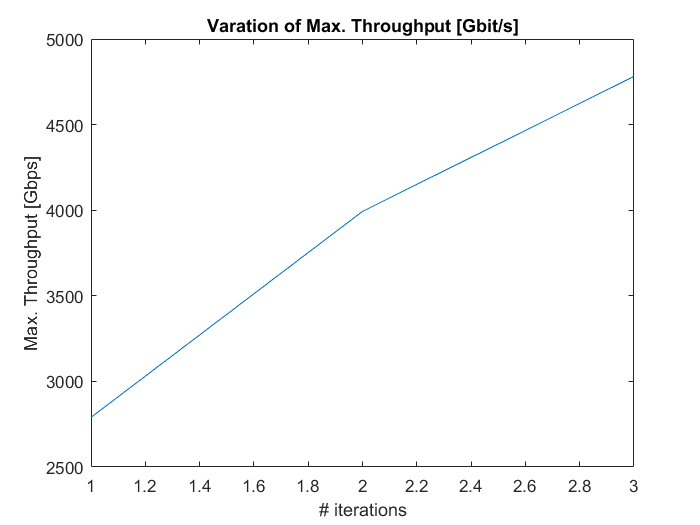
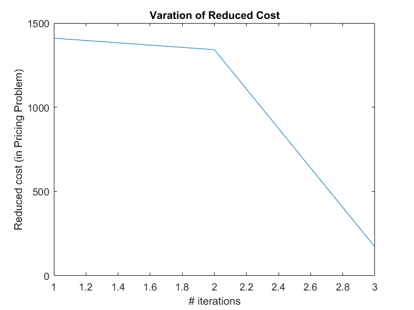

Contents
- main: load settings
- main: maximize network throughput
- main: passing parameters
- main: print out information
- main: plot result
- main: deal with function output
- CG: pre-calculate ColorLessLightPathSet
- CG-step 1: initialize configuration
- CG-step 2: process new configuration and current set
- CG-step 3: Loop begins
- CG-step 4: RMP with integer constraints
- CG-step 5: configure wavelength
- CG-step 6: data post-processing
- ILP-initialize parameters
- ILP-step1: define variable
- ILP-step2: add constraints
- ILP-step3: set objective
- ILP-step4: solve problem
- SequentialLoadingHeu: initialize
- SequentialLoadingHeu-step1: generate demands
- SequentialLoadingHeu-step2: loading demands sequentially
- SequentialLoadingHeu-step3: return demands and capacity
function [varargout] = main(SimulationSetting)
main: simulation setup, start compuation, and print and plot results.
Related paper : <Throughput Maximization in Multi-Band ... Optical Networks with Column Generation>
------------------------------ Output:
- 'varargout' LightPathSet: lightpath information isEdgeUseSlot: network block information info: computation (time, results, ...)
- log file: 'Results_heu_log.txt' log of sequential algorithm
'Results_Configuration.txt' log of CG;
'Results_TableCG.txt' log of detailed CG; 'Results_LightPathSetPerCommodity' lightpath information
'Results_Table.txt' log of current algorithm;------------------------------
key parameters
SimulationSetting : [struct] user-given parameters;
Networks : [struct] basic network parameters, ...
(nodes, topologies, distance matrix, etc.);
NetState : [struct] network state accompliashed with network, ...
including no. slots, LinkSlotBlock.
CandidateOpticalBand : [class 'OpticalBand' array] candidate bands, ...
e.g., CBand, LBand;
CandidateTransponder : [class 'Transceiver' array] candidate
transceivers at x GBd, including spectral
efficiency, SNR, bandwidth, etc.
CandidateModFormat : [class 'TransmissionMode' array]
transmission modes with different MFs and FECs,
e.g., PM_BPSK with 7% FEC overhead. We only show
three properties, i.e., required SNR, capacity,
and transmission reach;
LightPathSet : [class 'LightPath'] lightpaths in a network.
MultiCommodityFlow : [class 'Demand']
MaxThroughputOptions : [class 'MaxOption'] user-defined options
during optimization.
------------------------------Note: * 'Commodity/NodePair/Connection': a unique source and destination node pair, in a network. At most one entity exists for (s,d). * 'demand/flow' : the possible user traffic [bps]. It can be repeated. * 'CapacityMatrix' : this is initialized by regarding lightpath as p_{s,d,k,ob,tb,m}, so that transmission capacity of lightpath can be easily retrieved by indexing function. * 'Channel/Slot/Wavelength' : They are totally equivalent in representing the basic spectrum unit in this project. Further refinements to distinguish channels and slots can be made, if we regard 'a' and 'a+1' slots as two channels, and 'a,a+1' as a third channel.
Author: cao.chen Log: Derived from <simple_main_sequential_loadingMultiBandsv2.m> - 22nd, Jun, 2023. Review code. - 7, Nov. 2023. Review code. - 11, Jan. 2024.
main: load settings
ImportLib(); % ============================== % Load settings % ============================== if nargin==0 ConfigFile = 'setup/SimulationSetup_EX4.yaml'; SimulationSetting = ReadYaml(ConfigFile); end networkTag = SimulationSetting.network_tag; rngSeed = SimulationSetting.random_seed; % ============================== % Load optical bands % ============================== [TotalOpticalBand, nTotalOpticalBand, frequencySlots] = ... initializeOpticalBand(SimulationSetting); keyName ='name'; [CandidateOpticalBand,nCandidateOpticalBand] = ... getClassByFields( ... SimulationSetting.widebandset ... , keyName ... , TotalOpticalBand ... ); % keyName = 'centerFrequency'; % CandidateOpticalBand = sortClass(CandidateOpticalBand, keyName); assert(... nCandidateOpticalBand == SimulationSetting.number_of_bands ... , 'MATLAB:main:UnMatchedSize'... , 'Wrong optical band setting'); % ============================== % Load transceiver parameters % ============================== [TotalTransceiverAddNull, nTotalTransceiver] ... = initializeTransceiver(SimulationSetting); keyName = 'name'; [CandidateTransceiver, nCandidateTransceiver] ... = getClassByFields(... SimulationSetting.transponder_set ... , keyName ... , TotalTransceiverAddNull ... ); assert(... nCandidateTransceiver == SimulationSetting.number_of_transponder ... , 'MATLAB:main:UnMatchedSize'... , 'Wrong TRx setting'... ); % ============================== % Load transmission modes % ============================== [TotalTransmissionMode, nTotalTransmissionMode] ... = initializeTransmissionMode(SimulationSetting); keyName = 'name'; [CandidateTRxMod,nCandidateTRxMod] ... = getClassByFields(... SimulationSetting.transmission_mode_set ... , keyName ... , TotalTransmissionMode); assert(... nCandidateTRxMod == SimulationSetting.number_of_transmission_modes... , 'MATLAB:main:UnMatchedSize'... , 'Wrong transission mode setting'); % % ------------------------------ % #demo: fixed vs. flexible capacity;(try search 'demo'); % CandidateTRxMod = ... % getClassByFields('PM_QPSK', 'name', TotalTransmissionMode); % nCandidateTRxMod = 1; % % ------------------------------ % ============================== % Load traffic demand % ============================== MultiCommodityFlow ... = initializeCommodityFlows(SimulationSetting); % ============================== % Load networks % ============================== networkFileName = ... sprintf('networks/mat_%s/%s.mat' ... , networkTag ... , networkTag); load(networkFileName); OpticalNetworks = initializeNetworks(... networkTag... , distanceSpanMatrix... , longitudeDegreeArray... , latitudeDegreeArray... ); % user-defined initialization function. % showNetworks(logical(distanceSpanMatrix) ... % , longitudeDegreeArray ... % , latitudeDegreeArray); % show Networks if required. % ============================== % Load network state % ============================== netStateFileName = sprintf(... 'Networks/mat_%s/netstate_%s%s.mat' ... , networkTag ... , networkTag ... , CandidateTransceiver.name ... ); if exist(netStateFileName) load(netStateFileName); else % NetState = initializeNetworkState(OpticalNetworks... , SimulationSetting.candidate_routes ... , SimulationSetting.number_of_slots ... , MultiCommodityFlow); save(netStateFileName, 'NetState'); end % ============================== % Update LinkSlotBlock % - Import optical band profile % - Update edgeSlotBlock (edge spectrum status, slot's optical band ID) % ============================== bandProfileSetting = ReadYaml(SimulationSetting.wideband_file); isEdgeUseOpticalBand = initializeFiberOpticalBand( ... OpticalNetworks, CandidateOpticalBand, bandProfileSetting); [CandidateOpticalBand] = assignSlotPosition(CandidateOpticalBand); [isEdgeUseSlot, opticalBandNoOfSlot] ... = initializeEdgeSlot(... isEdgeUseOpticalBand ... , CandidateOpticalBand ); assert(... size(isEdgeUseSlot,2) == NetState.nSlots ... , 'MATLAB:main:UnMatchedSize' ... , 'wrong slots setting' ... ); % if slot number neq total given slots. NetState.isEdgeUseSlot = isEdgeUseSlot; NetState.opticalBandNoOfSlot = opticalBandNoOfSlot; % - user parameter NetState.userParameters = []; % default parameter; % Note : This is a read/write interface. % You can use it for debugging netstate-related parameters. % % Example % ILP : null % SequentialHeu : searching index matrix for respective elements % of (s,d) on index (k,w); % CG : solving times, no. iterations, optimal bound of LP, etc. ... % ============================== % Capacity initialzation, assign % - Baud*SE for p_{s,d,k,ob,tb,m}, if worstSNR >= REQSNR, % - 0, otherwise. % ============================== % % 1. margin for path p_{s,d,k,ob,tb,m}, e.g., margin = 10*log(SNRREQ), considering % - a fixed margin for all; % - optical bands margin; % fixed margin minReqMargin0 = 1; % optical band margin; minReq1_Pathsdk_atOpticalBand_atTRx_withTRxMod = zeros(... OpticalNetworks.nNodes, ... OpticalNetworks.nNodes, ... NetState.nRoutes, ... nCandidateOpticalBand, ... nCandidateTransceiver, ... nCandidateTRxMod... ); % Note: we use '_' for naming. for iOpticalBand = 1 : nCandidateOpticalBand thisBand = CandidateOpticalBand(iOpticalBand); minReq1_Pathsdk_atOpticalBand_atTRx_withTRxMod(... 1:OpticalNetworks.nNodes, ... 1:OpticalNetworks.nNodes,... 1:NetState.nRoutes,... iOpticalBand, ... 1:nCandidateTransceiver, ... 1:nCandidateTRxMod) ... = dB2lin(thisBand.SNRpenaltydB); end minReqFull_Pathsdk_atOpticalBand_atTRx_withTRxMod ... % linking all margins. = minReqMargin0 .* minReq1_Pathsdk_atOpticalBand_atTRx_withTRxMod; % 2. REQSNR : transforming margin into required SNR. minRequiredSNR_Pathsdk_atOpticalBand_atTRXBaud_withM = ... initializeRequiredSNR(... minReqFull_Pathsdk_atOpticalBand_atTRx_withTRxMod, CandidateTRxMod); % 3. Capacity initialzation, % worstSNR: the SNR in worst-case transmission SNRAfterFirstSpan = 120; % around 10^(20.7/10); worstSNR_Pathsdk_atOpticalBand_atBaud_withM = ... SNRAfterFirstSpan ... ./ repmat(NetState.lengthOfPathOfsdk,... 1,1,1,nCandidateOpticalBand,nCandidateTransceiver,nCandidateTRxMod); CapacityMatrix_kthRoute_atOpticalBand_atTRXBaud_withM = ... assignCapacityForAllCandidates(... worstSNR_Pathsdk_atOpticalBand_atBaud_withM, ... minRequiredSNR_Pathsdk_atOpticalBand_atTRXBaud_withM, ... CandidateTransceiver, ... CandidateTRxMod); % ============================== % Check before use % ============================== % check frequency slots from two sources : % - default no. slots (given SimulationSettings.frequency_slots). % - transceiver's baud-rate. for iTransceiver = 1 : nCandidateTransceiver thisTRx = CandidateTransceiver(iTransceiver); assert(thisTRx.GBaud == SimulationSetting.frequency_slots... , 'MATLAB:main:UnMatchedSize'... , 'Wrong frequency slots setting'... ); end
main: maximize network throughput
Max Option settings
% 1. ILPmodel algorithmName = 'ColumnGenerationHeu'; % e.g., ColumnGenerationHeu;SequentialLoadingHeu;ILPmodel MaxThroughputOptions = MaxOption(algorithmName); MaxThroughputOptions = setSolverOption(MaxThroughputOptions ... , 'costLimit', SimulationSetting.limited_transceivers... , 'rngSeed', rngSeed... );
MaxThroughputOptions = setSolverOption(MaxThroughputOptions, ...
'algorithmOption.ILP_FeasibilityTol', SimulationSetting.ILP_FeasibilityTol, ...
'algorithmOption.ILP_OptimalityTol', SimulationSetting.ILP_OptimalityTol,...
'algorithmOption.ILP_MIPGap', SimulationSetting.ILP_mingap, ...
'algorithmOption.ILP_TimeLimit', SimulationSetting.ILP_TimeLimit...
); % For algorithmName = 'ILPmodel'MaxThroughputOptions = setSolverOption(MaxThroughputOptions, ... 'algorithmOption.strategyLPConfigInitial', 'SequentialLoadingHeu', ... ...%'1LP per configuration', 'kSP-FF per configuration' 'SequentialLoadingHeu' 'algorithmOption.RMPINTOptimalityTol', SimulationSetting.rmpINT_optimality_tol,... 'algorithmOption.RMPINTMIPgap', SimulationSetting.rmpINT_mingap, ... 'algorithmOption.RMPINTTimeLimit', SimulationSetting.rmpINT_TimeLimit,... 'algorithmOption.rmp_mingap', SimulationSetting.rmp_mingap, ... 'algorithmOption.rmp_TimeLimit', SimulationSetting.rmp_TimeLimit, ... 'algorithmOption.ConfigGroupSorting', 'number_of_Reps',... ... % 'number_of_FSs', 'number_of_LPs', 'number_of_Reps', 'randomly', 'algorithmOption.ConfigGroupDirection', 'descend', ... ... % 'ascend' or 'descend', 'algorithmOption.ConfigSingleDirection', 'default',... ... % 'randomly', 'default' 'algorithmOption.pricing_optimality_tol', SimulationSetting.pricing_optimality_tol, ... 'algorithmOption.pricing_mingap', SimulationSetting.pricing_mingap... ); % For algorithmName = 'ColumnGenerationHeu'
MaxThroughputOptions = setSolverOption(MaxThroughputOptions, ...
'algorithmOption.LoadingStrategy', 'kSP-FF', ...
...%'FF-kSP', 'kSP-FF'
'algorithmOption.TerminateStrategy', 'First-blocking'...
); % For algorithmName = 'SequentialLoadingHeu'Add lightpath constraint if required; #temproaliry option
MaxThroughputOptions.costLimit = 8000;
fprintf(sprintf('%sN%dR%gTRx%g\n', networkTag, ... OpticalNetworks.nNodes,... rngSeed, ... CandidateTransceiver(1).GBaud)); [resultNetworkThroughput, NetState, LightPathSet, computationTime] = ... MaxThroughput(algorithmName, ... OpticalNetworks, ... NetState, ... CapacityMatrix_kthRoute_atOpticalBand_atTRXBaud_withM, ... MultiCommodityFlow, ... CandidateOpticalBand, ... CandidateTransceiver, ... CandidateTRxMod, ... MaxThroughputOptions); % Input: % - OpticalNetworks: network topology, % - NetState: initial network state. % - MultiCommodityFlow: demand profile % - CandidateTransceiver: transceiver set, % - CandidateTRxMod: transmission mode set, % - MaxThroughputOptions: other simulation configurations, % % Output: % - lightpath, % - edge spectrum usage % - other infos. % % % Step 3: gathering information; % % % ============================== % Calculate metric; % ============================== assert(abs(resultNetworkThroughput ./ min(min( ... NetState.totalCapacityMatrix ./ NetState.normDemandMatrix)) - 1) <= 1e-6... , 'MATLAB:main:UnExpectedResults'... , 'Not coinciding throughput definition'... ); resultNoLightPaths = LightPathSet.nSize; resultNetworkCapacity = sum(sum(NetState.totalCapacityMatrix)); % Export network fragmentation info. bandwidthTypesSet = unique( ... LightPathSet.nFrequencySlots(1 : resultNoLightPaths)); % Note: 1 for fixed-grid; >=1 for flex-grid; resultSpectrumFragRatio = calculateNetworkFragmentationRatio(... NetState.isEdgeUseSlot, bandwidthTypesSet); resultNetworkUtilizationRate = calculateNetworkOccupationRate(... NetState.isEdgeUseSlot); % Average transmission capaicty per optical band. resultCapacity_ofopticalband = ... groupSum( ... nonzeros(LightPathSet.capacity) ... , nonzeros(LightPathSet.opticalBandNo)... ); resultNoLightPaths_ofopticalband = ... groupSum( ... logical(nonzeros(LightPathSet.capacity)) ... , nonzeros(LightPathSet.opticalBandNo)... );
EX4N4R0TRx50 t(ColumnGenerationHeu): 1.75823 seconods NetworkThroughput =0.00465 Pbps, No. Transceivers =24 Spectrum fragmentation ratio = 0.908909 Network Occuptation Rate = 0.642857
main: passing parameters
info = containers.Map; info('RngSeed') = rngSeed; info('NetworkID') = networkTag; info('Gbaud') = ... getNumeric(CandidateTransceiver, 'GBaud'); info('ModFormat') = getChar(CandidateTRxMod, 'name'); info('Algorithms') = algorithmName; info('Time') = computationTime; info('NetworkThroughput') = resultNetworkThroughput; info('NetwokCapacity') = resultNetworkCapacity; info('NoTransceivers') = resultNoLightPaths; info('LimitedTransceivers') = MaxThroughputOptions.costLimit; for iBand = 1 : nCandidateOpticalBand thisBand = CandidateOpticalBand(iBand); info(sprintf(... '%sAvgCap',thisBand.name)) ... = resultCapacity_ofopticalband(iBand) ... / resultNoLightPaths_ofopticalband(iBand); end Astr = []; for iiBand = 1 : nCandidateOpticalBand thisBand = CandidateOpticalBand(iiBand); Astr = sprintf('%s%g ', Astr, ... thisBand.SNRpenaltydB); end info('MultiBand') = Astr; info('SpectrumFragmentation')= resultSpectrumFragRatio; info('NetworkUtilization') = resultNetworkUtilizationRate;
main: print out information
% ------------------------------ % Print Data as containers.map - for analyzing; [nameRow,valueRow] = printContainer(info); printTextToFile(... 'Results_Table.txt'... , sprintf('%s\n%s', nameRow, valueRow) ... , 'A'); % ------------------------------ % Print LightPath to text file fileName = 'Results_LightPathSetPerCommodity.txt'; LightPathSetPerCommodity = repmat(... LightPath(round(NetState.nSlots/2),OpticalNetworks.nEdges) ... ,MultiCommodityFlow.nSize,1); for iPath = 1 : LightPathSet.nSize pNo = iPath; cNo = LightPathSet.nodePairNo(pNo); LightPathSetPerCommodity(cNo) = ... addLightPath(LightPathSetPerCommodity(cNo),LightPathSet,pNo); end itemName = {... 'capacity'... , 'cost'... , 'strPath'... , 'wavelengthNo'... , 'transceiverNo'... , 'transmissionModeNo'... }; printLightPathSetWithFlow(... LightPathSetPerCommodity, ... MultiCommodityFlow, ... itemName, ... fileName, 'w+');
main: plot result
edgeSlotBlock_coloredByOpticalBandNo = ... repmat(... NetState.opticalBandNoOfSlot'... , OpticalNetworks.nEdges... , 1 ... ); % give opticalbandNo. isChannelUseSlots = sparse(eye(NetState.nSlots,NetState.nSlots)); [isEdgeUseSlot] = convertLightPath2EdgeSlot(... LightPathSet ... , isChannelUseSlots... ); assert(isequal(isEdgeUseSlot, NetState.isEdgeUseSlot) ... , 'MATLAB:main:UnMatchedSize' ... , 'Check it again'... ); % showEdgeSpectrumGraph( ...% Network status; % NetState.isEdgeUseSlot ... % , edgeSlotBlock_coloredByOpticalBandNo ... % , CandidateOpticalBand); % % pause(0.1); % figure(87), % clf; % imagesc(logical(isEdgeUseSlot), 'CDataMapping', 'scaled');colorbar % title('Spectrum Usage Graph'); % xlabel('Slot'); % ylabel('Link'); % hold off;
main: deal with function output
nOutputs = nargout; varargout= cell(1,nOutputs); for k = 1:nOutputs switch(k) case 1 varargout{1} = LightPathSet; case 2 varargout{2} = isEdgeUseSlot; case 3 varargout{3} = info; otherwise error('undefined'); end end
end function [networkThroughput,NewNetstate,LightPathSet] = ... ColumnGenerationHeu(Networks, NetState, ... CapacityMatrix_kthRoute_atOpticalBand_atTRXBaud_withM, ... Commodity, CandidateOpticalBand,CandidateTransponder,... CandidateModFormat, MainOptions)
Procedure : Column Generation Approach for RWA and RWBA problems.
1: Initialize wavelength configuration set Omega_init
2: c_new <-- null, Omega<--Omega_init.
3: Do
4: Omega <== Omega and {c_new}
5: Solve RMP(Omega) with relaxing variables, z_c\in R_{\geq 0}
6: Choose a column c_new via pricing problem(s)
7: While Reduced cost in line 6 is positive
8: Solve RMP(Omega) with integer variables, z_c\in Z_{\geq 0}
9: Assign a wavelength to each configurationAuthor: cao chen (chen.cao{at}sjtu.edu.cn; chen_cao_{at}hotmail.com)
Date: Nov. 7, 2023.assert(strcmp(MainOptions.algorithmName,'ColumnGenerationHeu')... , 'MATLAB:ColumnGenerationHeu:UnMatchedName'... , 'Algorithm name does not match'... );
NUM_COMMODITY = Commodity.nSize; NUM_SLOT = NetState.nSlots; NUM_ROUTE = NetState.nRoutes; NUM_NODE = Networks.nNodes; NUM_EDGE = Networks.nEdges; NUM_TRANSPONDER = length(CandidateTransponder); NUM_MODULATIONFORMATS = length(CandidateModFormat); NUM_OPTICALBAND = length(CandidateOpticalBand); MAXIMUM_ITERATION = MainOptions.algorithmOption.CG_NoLoops; vec_bandNo_ofCh = NetState.opticalBandNoOfSlot; vec_limitedwavelengths_onbands = getNumeric(CandidateOpticalBand ... , 'nFrequencySlots'); MAX_TRANSCEIVER = MainOptions.costLimit;
CG: pre-calculate ColorLessLightPathSet
Pre-calculate ColorLessLightPathSet _p(s,d,k,ob)_ - This set shows all possible lightpaths within a configuration. - Default transceiverNo 1
MAX_LIGHTPATH_CONFIGURE = Networks.nEdges; % since ideally, one lightpath - one hop. MAX_POSSIBILITY_PERCONFIG = NUM_COMMODITY * NUM_ROUTE * NUM_OPTICALBAND; assert(... NUM_TRANSPONDER == 1 ... , 'MATLAB:ColumnGenerationHeu:FixGrid'... , 'Cannot support two transceivers now'... );
Create colorless lightpath set
ColorlessLightPathSet = ... createColorlessLightPath(... LightPath(MAX_POSSIBILITY_PERCONFIG, NUM_EDGE)... , Commodity ... , NetState... ); % Assign capacity with highest modulation format for iPath = 1 : ColorlessLightPathSet.nSize pNo = iPath; tb = 1; [maxCapacity, targetMod] = max(... CapacityMatrix_kthRoute_atOpticalBand_atTRXBaud_withM(... ColorlessLightPathSet.sourceNo(pNo), ... ColorlessLightPathSet.destinationNo(pNo), ... ColorlessLightPathSet.routeNo(pNo), ... ColorlessLightPathSet.opticalBandNo(pNo), ... tb, ... ColorlessLightPathSet.transceiverNo(pid), ... 1:NUM_MODULATIONFORMATS)... ); ColorlessLightPathSet.capacity(pNo) ... = maxCapacity; ColorlessLightPathSet.transmissionModeNo(pNo) ... = targetMod; end
CG-step 1: initialize configuration
algorithmEventInitialize = tic; switch MainOptions.algorithmOption.strategyLPConfigInitial case '1LP per configuration' LP_Config_Block = zeros(MAX_LIGHTPATH_CONFIGURE, NUM_COMMODITY); for iConfig = 1 : NUM_COMMODITY for jPath = 1 : ColorlessLightPathSet.nSize if iConfig == ColorlessLightPathSet.connectionNo(jPath) LP_Config_Block(1, iConfig) = jPath; break; end end end case 'SequentialLoadingHeu' % ============================== % Set initial algorithm options; % ============================== nInitialConfig = min(NUM_COMMODITY,NUM_SLOT); % We consider the minimum number of configurations as NUM_COMMODITY, % This is for least flow between any node pairs in the network. InitialOptions = MaxOption('SequentialLoadingHeu'); InitialOptions = setSolverOption(InitialOptions, ... 'algorithmOption.algorithmName', 'SequentialLoadingHeu', ... 'algorithmOption.LoadingStrategy', 'kSP-FF',...'kSP-FF', 'FF-kSP' 'algorithmOption.TerminateStrategy','All-blocking'); InitialNetstate = NetState; InitialNetstate.isEdgeUseSlot = zeros(NUM_EDGE, nInitialConfig); InitialNetstate.nSlots = nInitialConfig; InitialNetstate.userParameters = zeros(NUM_NODE, NUM_NODE); % searching idx (for initial optimization); % ============================== % Optimize % ============================== [~, ~,uLightPathSet] = SequentialLoadingHeu(... Networks, ... InitialNetstate, ... CapacityMatrix_kthRoute_atOpticalBand_atTRXBaud_withM, ... Commodity, ... CandidateOpticalBand, CandidateTransponder,... CandidateModFormat,InitialOptions); % u means 'user'; % ============================== % remove channel information, LightPaths --> Config; % ============================== LP_Config_Block = zeros(... MAX_LIGHTPATH_CONFIGURE,... nInitialConfig... ); blockInitial_pNo_ofConfig = removeWavelength(... uLightPathSet ... , ColorlessLightPathSet ... ); LP_Config_Block(1 : MAX_LIGHTPATH_CONFIGURE,1 : nInitialConfig)=... blockInitial_pNo_ofConfig(... 1 : MAX_LIGHTPATH_CONFIGURE ... , 1 : nInitialConfig... ); otherwise error('non-specified StrategyLPConfigInitial'); end timeInitialize = toc(algorithmEventInitialize);
CG-step 2: process new configuration and current set
Wavelength configuration properties
- nSize: [1]
- isActive: [1] * Omega
- no: [1] * Omega
- opticalBandNo: [1] * Omega
- nFrequencySlot: [1] * Omega
- nLightPath: [1] * Omega
- lightPathNoSet: MAX_LIGHTPATHS_PERCONFIG * Omega
- capacity_perCommodity: Commodity * Omega
CandidateWaveConfigSet = ... WaveConfig(1e3, ... struct(... 'MAXIMUM_LIGHTPATHS_CONFIGURE', MAX_LIGHTPATH_CONFIGURE... , 'NUM_COMMODITY', NUM_COMMODITY... )... ); % configure by the known lightpaths. CandidateWaveConfigSet = ConfigureParameters(CandidateWaveConfigSet, ... [1:size(LP_Config_Block,2)], ... LP_Config_Block,... ColorlessLightPathSet);
CG-step 3: Loop begins
OptionsForRMP = sdpsettings('solver', 'gurobi'... , 'verbose', 0 ... , 'cachesolvers', 1 ... , 'gurobi.MIPGap', MainOptions.algorithmOption.rmp_mingap... , 'debug', 0 ... , 'gurobi.TimeLimit', MainOptions.algorithmOption.rmp_TimeLimit... ); % - Simulation: ILP option OptionPricing.OptimalityTol = MainOptions.algorithmOption.pricing_optimality_tol; OptionPricing.MIPgap = MainOptions.algorithmOption.pricing_mingap; algorithmEventCGLoop = tic; % ============================== % Create plot handles % ============================== objRMP_ofiter = NaN(MAXIMUM_ITERATION, 1); objPricing_ofiter = NaN(MAXIMUM_ITERATION, 1); figure(1); hRMP = plot(objRMP_ofiter,'YDataSource','objRMP_ofiter'); xlabel('# iterations'); ylabel('Max. Throughput [Gbps]'); title('Varation of Max. Throughput [Gbit/s]'); figure(2); hPricing = plot(objPricing_ofiter,'YDataSource','objPricing_ofiter'); xlabel('# iterations'); ylabel('Reduced cost (in Pricing Problem)'); title('Varation of Reduced Cost'); %================================= % Create empty configuration %================================= ConfigNew = []; Capacity_oncommodity = []; idxBestPricing = []; for iIteration = 1 : MAXIMUM_ITERATION %================================= % Add a new configuration; %================================= curNo = CandidateWaveConfigSet.nSize; CandidateWaveConfigSet = ConfigureParameters(CandidateWaveConfigSet, ... [curNo+1], ... ConfigNew,... ColorlessLightPathSet... ); %================================= % Restricted Master Problem (printing reduced cost). %================================= % fprintf('At iteration %d ==============================\n'... % , count_iteration); % fprintf('**(Restricted Master Problem)\n'); [obj_RestrictedMasterProblem_LP, ... ~, ... dual_commodity, ... dual_onLimitedTransceiver, ... dual_onLimitedWavelength, ... ReducedCost_perConfig] = solveRMP( ... CandidateWaveConfigSet... , Commodity ... , vec_limitedwavelengths_onbands... , MAX_TRANSCEIVER... , OptionsForRMP... ); DualVariables = struct(... 'dual_commodity', dual_commodity, ... 'dual_onLimitedTransceiver', dual_onLimitedTransceiver, ... 'dual_onLimitedWavelength', dual_onLimitedWavelength... ); % ============================== % Pricing Problem % :: Maximum Weight Independent Set Problem. % ============================== % fprintf('**(Pricing problem)==============================\n'); OBJ_REDUCED_COST = zeros(NUM_OPTICALBAND, 1); ConfigNewPricing = zeros(MAX_LIGHTPATH_CONFIGURE, NUM_OPTICALBAND); for b = 1 : NUM_OPTICALBAND % ============================== % Pricing by ILP % ============================== % [ConfigNew, obj_PricingProblem, NoLPsConfigNew] = ILP_ForPricingMultiBand( ... % OptionPricing... % ,ColorlessLightPathSet... % ,b... % choose LightPaths on ob-th optical band. % ,Commodity... % ,DualVariables ... % ,Networks... % ); % ============================== % Pricing by heuristics % ============================== [ConfigNew, obj_PricingProblem, NoLPsConfigNew] = ... HEU1_ForPricingMultiBand( ... OptionPricing, ... ColorlessLightPathSet, b, ... Commodity, ... DualVariables... ); OBJ_REDUCED_COST(b) = obj_PricingProblem; ConfigNewPricing(1 : NoLPsConfigNew, b) = ... ConfigNew(1 : NoLPsConfigNew); end % ============================== % Find the most promising configuration; % - idxBestPricing : optical band no. % - ConfigNew : lightPaths in this configuration; % ============================== [~,idxBestPricing] = max(OBJ_REDUCED_COST); if OBJ_REDUCED_COST(idxBestPricing)<=1e-4 fprintf('iteration ends with no new optimal columns\n'); break; end ConfigNew = ConfigNewPricing(1 : MAX_LIGHTPATH_CONFIGURE,idxBestPricing); % ============================== % Plot convergence performance objRMP_ofiter(iIteration) = obj_RestrictedMasterProblem_LP; objPricing_ofiter(iIteration)= OBJ_REDUCED_COST(idxBestPricing); refreshdata(hRMP,'caller'); drawnow; refreshdata(hPricing,'caller'); drawnow; pause(.05); % ============================== end timeCGLoop = toc(algorithmEventCGLoop);
iteration ends with no new optimal columns 
CG-step 4: RMP with integer constraints
Simulation: ILP option for RMP_INT
OptionRMPINT.OptimalityTol = MainOptions.algorithmOption.RMPINTOptimalityTol; OptionRMPINT.MIPgap = MainOptions.algorithmOption.RMPINTMIPgap; OptionRMPINT.TimeLimit = MainOptions.algorithmOption.RMPINTTimeLimit; eventRMPINT = tic; [obj_RestrictedMasterProblem, rep_Config] = solveRMP_INT( ... OptionRMPINT ... , CandidateWaveConfigSet... , Commodity ... , vec_limitedwavelengths_onbands ... , MAX_TRANSCEIVER... ); networkThroughput = obj_RestrictedMasterProblem; rep_Config = round(rep_Config); % float if large solution gap timeRMPINT = toc(eventRMPINT);
Academic license - for non-commercial use only
Gurobi Optimizer version 9.0.1 build v9.0.1rc0 (win64)
Optimize a model with 12 rows, 7 columns and 33 nonzeros
Model fingerprint: 0x236a17ae
Variable types: 1 continuous, 6 integer (0 binary)
Coefficient statistics:
Matrix range [3e-01, 6e+02]
Objective range [1e+00, 1e+00]
Bounds range [0e+00, 0e+00]
RHS range [2e+00, 1e+06]
Found heuristic solution: objective 0.0000000
Presolve removed 9 rows and 4 columns
Presolve time: 0.00s
Presolved: 3 rows, 3 columns, 7 nonzeros
Found heuristic solution: objective -1185.000000
Variable types: 0 continuous, 3 integer (0 binary)
Root relaxation: objective -5.055401e+03, 3 iterations, 0.00 seconds
Nodes | Current Node | Objective Bounds | Work
Expl Unexpl | Obj Depth IntInf | Incumbent BestBd Gap | It/Node Time
0 0 -5055.4011 0 3 -1185.0000 -5055.4011 327% - 0s
H 0 0 -4200.000000 -5055.4011 20.4% - 0s
H 0 0 -4650.000000 -5055.4011 8.72% - 0s
0 0 -5055.4011 0 3 -4650.0000 -5055.4011 8.72% - 0s
Explored 1 nodes (3 simplex iterations) in 0.10 seconds
Thread count was 4 (of 4 available processors)
Solution count 4: -4650 -4200 -1185 0
No other solutions better than -4650
Optimal solution found (tolerance 1.00e-02)
Best objective -4.650000000000e+03, best bound -4.650000000000e+03, gap 0.0000%
Solver thinks it is feasible
Obj = 4650
No. Times = [2,0,4,0,0,2]
opticalBandNo = [1,1,1,2,2,2]
No. Transceivers = sum([18,6]) = [24]/[1000000]
No. Wavelengths = [6,2]/[6,2]
CG-step 5: configure wavelength
Sort configurations
PackOption = struct( ... 'isGroup', true, ... 'direction', 'descend', ...'descend', 'ascend' 'basis', 'numberOfRepetitions'... ...'numberOfRepetitions', ...'numberOfFrequencySlots', ...'numberOfLightPaths', ...'random' ); [vec_ColoredConfigID_ofCh] = packConfiguration(CandidateWaveConfigSet, ... rep_Config, PackOption); % ============================== % Processing lightpath; % ============================== LP_Config_Block = CandidateWaveConfigSet.lightPathNoSet(1:MAX_LIGHTPATH_CONFIGURE,... 1:CandidateWaveConfigSet.nSize); % add color : configuration to lightpath; LightPathSet = addWavelength(... LP_Config_Block... , rep_Config... , vec_ColoredConfigID_ofCh... , ColorlessLightPathSet... ); for iiPath = 1 : LightPathSet.nSize pNo = iiPath; wChannel = LightPathSet.wavelengthNo(pNo); LightPathSet.opticalBandNo(pNo) = vec_bandNo_ofCh(wChannel); end Z_Ch_useslots = eye(NUM_SLOT,NUM_SLOT); [edgeSlotBlock] = convertLightPath2EdgeSlot(... LightPathSet ... , Z_Ch_useslots);
CG-step 6: data post-processing
============================== Obtain neccesary parameter settings; ==============================
nConfigs = CandidateWaveConfigSet.nSize; nPath_perConfig = double(CandidateWaveConfigSet.nLightPath(1 : nConfigs)); assert(... nPath_perConfig(:)'*rep_Config(:) == LightPathSet.nSize... , 'MATLAB:ColumnGenerationHeu:UnMachedSize'... , 'They must be same'... ); assert(... numel(rep_Config) == nConfigs... , 'MATLAB:ColumnGenerationHeu:UnExpectedValues'... , 'They must be in the same size'... ); assert(... sum(rep_Config(:)) <= sum(vec_limitedwavelengths_onbands)... , 'MATLAB:ColumnGenerationHeu:UnExpectedValues'... , 'Wrong wavelength'... ); vec_bandNo_onconfigc = CandidateWaveConfigSet.opticalBandNo(1:nConfigs); capacityMatrix_commodityi_onconfigc = ... CandidateWaveConfigSet.capacity_perCommodity(... 1 : NUM_COMMODITY, ... 1 : nConfigs... ); %================================= % Processing and passing parameters. %================================= % no. LPs per optical band vec_nLPs_ofband = groupSum(... nPath_perConfig(:).*rep_Config(:)... , vec_bandNo_onconfigc... ); % total LPs' capacity per optical band vec_LPCap_ofbands = groupSum(... sum(capacityMatrix_commodityi_onconfigc,1)'.*rep_Config(:)... , vec_bandNo_onconfigc... ); % ============================== % Update state % ============================== NewNetstate = NetState; connectionCapaicty = zeros(NUM_NODE,NUM_NODE); for iCommodity = 1 : NUM_COMMODITY src = Commodity.sourceNo(iCommodity); dst = Commodity.destinationNo(iCommodity); connectionCapaicty(src,dst) = ... capacityMatrix_commodityi_onconfigc(iCommodity, 1 : nConfigs) ... * rep_Config; end NewNetstate.totalCapacityMatrix = connectionCapaicty; UserParameters = struct(... 'obj_RMP_LP', obj_RestrictedMasterProblem_LP, ... 'NoConfigs', nConfigs, ... 'tCG_ofHeuInit',timeInitialize, ... 'tCG_iteration',timeCGLoop, ... 'tCG_INT', timeRMPINT... ); NewNetstate.userParameters = UserParameters; NewNetstate.isEdgeUseSlot = edgeSlotBlock;
- print configurations to text file;
- print selected information to text file;
fprintf('Average LP''s on Optical Bands = [%s] \n', ... printArray(vec_LPCap_ofbands ./ vec_nLPs_ofband)); fprintf('Column Generation (init.= %g, iter. = %g seconds, INT = %g seconds). \n',... timeInitialize, timeCGLoop, timeRMPINT); % print configurations to text file; fileName = 'Results_Configuration.txt'; headInfo = sprintf(... 'Objective: maximum network throughput = %g, no. lightpaths=%d, no. configurations=%d (no. configuration types= %d)\n', ... obj_RestrictedMasterProblem, ... LightPathSet.nSize, ... CandidateWaveConfigSet.nSize, ... length(nonzeros(rep_Config))); printTextToFile(fileName, headInfo, 'w+'); printConfiguration(... CandidateWaveConfigSet... , fileName ... , rep_Config ... , ColorlessLightPathSet); % ============================== % print selected information to text. % ============================== CG_DataRow = containers.Map; CG_DataRow('InitialAlgorithm') = ... MainOptions.algorithmOption.strategyLPConfigInitial; CG_DataRow('NetworkTESTID') = Networks.tag; CG_DataRow('NetworkThroughput') = networkThroughput; CG_DataRow('RngSeed') = MainOptions.rngSeed; CG_DataRow('obj_RMP_LP') = NewNetstate.userParameters.obj_RMP_LP; CG_DataRow('NoConfigs') = NewNetstate.userParameters.NoConfigs; CG_DataRow('tCG_ofHeuInit') = num2str(NewNetstate.userParameters.tCG_ofHeuInit); CG_DataRow('tCG_iteration') = num2str(NewNetstate.userParameters.tCG_iteration); CG_DataRow('tCG_INT') = num2str(NewNetstate.userParameters.tCG_INT); [nameRow, valueRow] = printContainer(CG_DataRow); printTextToFile(... 'Results_TableCG.txt'... , sprintf('%s\n%s', nameRow, valueRow)... , 'A'); % 'A' is important for parallel computation;
Average LP's on Optical Bands = [207.222,208.333] Column Generation (init.= 0.0796057, iter. = 0.870922 seconds, INT = 0.175578 seconds).
end function [NetworkThroughput, NewNetState, LightPathSet, ComputationTime]=... MaxThroughput(... func... , OpticalNetworks ... , NetState ... , capacityMatrix_kthRoute_atOpticalBand_atTRXBaud_withM ... , Commodity ... , CandidateOpticalBand ... , CandidateTransponder ... , CandidateModFormat ... , Options... ) % Check number of input arguments try narginchk(9,9); catch ME error(ME.message); end if(iscell(func)) fun = func{1}; elseif(isa(func,'char')) % for string; fun = str2func(func); else fun = func; end % capacity scaling; scalingFactor = Options.capacityScalingFactor; % ------------------------------ % scalingFactor = 1e-3*0+1; % #demo: scaling if neccessary; % ------------------------------ capacityMatrix_kthRoute_atOpticalBand_atTRXBaud_withM = ... capacityMatrix_kthRoute_atOpticalBand_atTRXBaud_withM ... .* scalingFactor; Alg = tic; switch Options.algorithmName case 'ColumnGenerationHeu' [NetworkThroughput,NewNetState,LightPathSet] = fun(... OpticalNetworks, NetState, ... capacityMatrix_kthRoute_atOpticalBand_atTRXBaud_withM, ... Commodity, ... CandidateOpticalBand,CandidateTransponder,CandidateModFormat,Options); NewNetState.userParameters.obj_RMP_LP= ...% special for user_parameters. NewNetState.userParameters.obj_RMP_LP*1/scalingFactor; case 'SequentialLoadingHeu' NetState.userParameters = zeros(OpticalNetworks.nNodes,... OpticalNetworks.nNodes); % searching idx <= 0 ; [NetworkThroughput,NewNetState,LightPathSet] = fun(... OpticalNetworks, NetState, ... capacityMatrix_kthRoute_atOpticalBand_atTRXBaud_withM, ... Commodity, ... CandidateOpticalBand,CandidateTransponder,CandidateModFormat,Options); case 'ILPmodel' [NetworkThroughput,NewNetState,LightPathSet] = fun(... OpticalNetworks, NetState, ... capacityMatrix_kthRoute_atOpticalBand_atTRXBaud_withM, ... Commodity, ... CandidateOpticalBand,CandidateTransponder,CandidateModFormat,Options); otherwise error('Not defined'); end ComputationTime = toc(Alg); % capacity re-scaling for all parameters related to the capacity; NetworkThroughput = NetworkThroughput * 1./scalingFactor; NewNetState.totalCapacityMatrix = ... NewNetState.totalCapacityMatrix * 1/scalingFactor; LightPathSet.capacity = LightPathSet.capacity * 1/scalingFactor; % Output basic information (results, run time, etc.) thisAlgorithmName = Options.algorithmOption.algorithmName; if(strcmp(Options.algorithmName, 'SequentialLoadingHeu')) thisAlgorithmName = sprintf('%s', ... Options.algorithmOption.LoadingStrategy); end fprintf('t(%s): %g seconods\n', thisAlgorithmName, ComputationTime); fprintf('NetworkThroughput =%g Pbps, No. Transceivers =%d\n', ... 1e-6*NetworkThroughput, LightPathSet.nSize); end function [networkThroughput, NewNetState, LightPathSet] = ... ILPmodel(... Networks ... , Netstate ... , capacityMatrix_kthRoute_atOpticalBand_atTRXBaud_withM ... , Commodity ... , CandidateOpticalBand ... , CandidateTransceiver ... , CandidateModFormat ... , MainOptions... )
% Check Algorithm's name; assert(strcmp(MainOptions.algorithmName, 'ILPmodel') ... , 'Algorithm name does not match'); % ============================== % Fast parameter extraction % ============================== NUM_NODE = Networks.nNodes; NUM_EDGE = Networks.nEdges; NUM_ROUTE = Netstate.nRoutes; NUM_CHANNEL = Netstate.nSlots; NUM_SLOT = Netstate.nSlots; EXCLUDE_IDDENTICALPAIR = Netstate.STATUS_TRUE_CONNECTIONS; normalizedDemand = Netstate.normDemandMatrix; bin_sdk_atl = Netstate.isPathOnsdkUseLink; vec_opticalBandNo_ofCh = Netstate.opticalBandNoOfSlot; NUM_TRANSPONDER = length(CandidateTransceiver); NUM_MODULATIONFORMAT = length(CandidateModFormat); NUM_COMMODITY = Commodity.nSize; limitedTransceivers = MainOptions.costLimit;
ILP-initialize parameters
Lightpath capacity conversion
capacityMatrix_kthRoute_atCh = zeros(NUM_NODE, NUM_NODE, NUM_ROUTE, NUM_CHANNEL); targetMod_kthRoute_atCh = zeros(NUM_NODE, NUM_NODE, NUM_ROUTE, NUM_CHANNEL); for ch = 1:NUM_CHANNEL idx_ob = vec_opticalBandNo_ofCh(ch); [cap,cM] = max(max( ... capacityMatrix_kthRoute_atOpticalBand_atTRXBaud_withM(... 1 : NUM_NODE... , 1 : NUM_NODE ... , 1 : NUM_ROUTE... , idx_ob ... , 1 : NUM_TRANSPONDER... , 1 : NUM_MODULATIONFORMAT... )... ,[],5)... ,[],6); targetMod_kthRoute_atCh(1:NUM_NODE,1:NUM_NODE,1:NUM_ROUTE,ch) = cM; capacityMatrix_kthRoute_atCh(1:NUM_NODE,1:NUM_NODE,1:NUM_ROUTE,ch) = cap; end
ILP-step1: define variable
eventILP = tic; var_bin_sdk_atCh = binvar(NUM_NODE,NUM_NODE,NUM_ROUTE,NUM_CHANNEL,'full'); var_Throughput = sdpvar(1,1); var_Throughput_matrix = sdpvar(NUM_NODE,NUM_NODE,'full');
ILP-step2: add constraints
Constraints = []; % Limited transceivers; Constraints = [Constraints, ... (sum(sum(sum(sum(var_bin_sdk_atCh))))<=limitedTransceivers):'Limited Transceivers']; % Constraints (1): for maximum capacity; this is easier to understand (may be not very fast) var_Capacity_Matrix = sum(sum(sum( ... capacityMatrix_kthRoute_atCh(:,:,1:NUM_ROUTE,1:NUM_CHANNEL).* var_bin_sdk_atCh(:,:,1:NUM_ROUTE,1:NUM_CHANNEL), ... 5),4),3); Constraints = [Constraints,... (var_Throughput_matrix(EXCLUDE_IDDENTICALPAIR)<=var_Capacity_Matrix(EXCLUDE_IDDENTICALPAIR)):['Throughput definition']]; Constraints = [Constraints,... % Bug Fixed (this expression is better). (var_Throughput.*normalizedDemand(EXCLUDE_IDDENTICALPAIR)<=var_Throughput_matrix(EXCLUDE_IDDENTICALPAIR)):'Total throughput']; % Constraints (2) one link no wavelength sharing; logical_sum_Matrix_ofK_atCh_onl = repmat(EXCLUDE_IDDENTICALPAIR,1,1,NUM_ROUTE,NUM_CHANNEL,NUM_EDGE) ... .* permute(repmat(bin_sdk_atl,1,1,1,1,NUM_CHANNEL),[1,2,3,5,4]); var_SingleLink_SingSlot = permute(sum(sum(sum( ... repmat(var_bin_sdk_atCh(1:NUM_NODE,1:NUM_NODE,1:NUM_ROUTE,1:NUM_CHANNEL),1,1,1,1,NUM_EDGE) ... .*logical_sum_Matrix_ofK_atCh_onl(1:NUM_NODE,1:NUM_NODE,1:NUM_ROUTE,1:NUM_CHANNEL,1:NUM_EDGE),... 1),... 2),... 3),... [5,4,1,2,3]); Constraints = [Constraints,... var_SingleLink_SingSlot <=ones(NUM_EDGE,NUM_SLOT)]; % % ============================== % % Temporaily for RWBA (w1=w2=w3=w4=w5, w6, w7, w8) #demo % % ============================== % Constraints = [Constraints,... % var_delta_sdk_atCh(1:nNodes,1:nNodes,1:NUM_ROUTES, 1) == var_delta_sdk_atCh(1:nNodes,1:nNodes,1:NUM_ROUTES, 2)]; % Constraints = [Constraints,... % var_delta_sdk_atCh(1:nNodes,1:nNodes,1:NUM_ROUTES, 1) == var_delta_sdk_atCh(1:nNodes,1:nNodes,1:NUM_ROUTES, 3)]; % Constraints = [Constraints,... % var_delta_sdk_atCh(1:nNodes,1:nNodes,1:NUM_ROUTES, 1) == var_delta_sdk_atCh(1:nNodes,1:nNodes,1:NUM_ROUTES, 4)]; % Constraints = [Constraints,... % var_delta_sdk_atCh(1:nNodes,1:nNodes,1:NUM_ROUTES, 1) == var_delta_sdk_atCh(1:nNodes,1:nNodes,1:NUM_ROUTES, 5)]; % % % ============================== % % Temporaily for RWA; (w1=w2=w3=w4, w5=w6=w7, w8) #demo % % ============================== % Constraints = [Constraints,... % var_delta_sdk_atCh(1:nNodes,1:nNodes,1:NUM_ROUTES, 1) == var_delta_sdk_atCh(1:nNodes,1:nNodes,1:NUM_ROUTES, 2)]; % Constraints = [Constraints,... % var_delta_sdk_atCh(1:nNodes,1:nNodes,1:NUM_ROUTES, 1) == var_delta_sdk_atCh(1:nNodes,1:nNodes,1:NUM_ROUTES, 3)]; % Constraints = [Constraints,... % var_delta_sdk_atCh(1:nNodes,1:nNodes,1:NUM_ROUTES, 1) == var_delta_sdk_atCh(1:nNodes,1:nNodes,1:NUM_ROUTES, 4)]; % % Constraints = [Constraints,... % var_delta_sdk_atCh(1:nNodes,1:nNodes,1:NUM_ROUTES, 5) == var_delta_sdk_atCh(1:nNodes,1:nNodes,1:NUM_ROUTES, 6)]; % Constraints = [Constraints,... % var_delta_sdk_atCh(1:nNodes,1:nNodes,1:NUM_ROUTES, 5) == var_delta_sdk_atCh(1:nNodes,1:nNodes,1:NUM_ROUTES, 7)];
ILP-step3: set objective
Objective = var_Throughput;
ILP-step4: solve problem
options = sdpsettings('solver', 'gurobi'... , 'verbose', 2 ... , 'cachesolvers', 1 ... , 'gurobi.FeasibilityTol', MainOptions.algorithmOption.ILP_FeasibilityTol... , 'gurobi.OptimalityTol', MainOptions.algorithmOption.ILP_OptimalityTol... , 'gurobi.MIPGap', MainOptions.algorithmOption.ILP_MIPGap... ); options.gurobi.TimeLimit = MainOptions.algorithmOption.ILP_TimeLimit; diagnostics = optimize(Constraints,-Objective,options); if diagnostics.problem == 0 disp('Solver thinks it is feasible') elseif diagnostics.problem == 1 disp('Solver thinks it is infeasible') elseif diagnostics.problem == -3 disp('Solver not found, so of course x is not optimized') else disp('Something else happened') end t_ILP = toc(eventILP);
Passing variables into workspace
delta_sdk_atCh = round(value(var_bin_sdk_atCh)); % avoid float value returned by Gurobi; delta_sdk_atCh = removeNaN(delta_sdk_atCh); networkThroughput = value(var_Throughput); assert(networkThroughput>=1e-4 ... , 'No throughput. Something might be wrong, please check the file or the matrix;'); isEdgeUseSlot = round(value(var_SingleLink_SingSlot)); yalmip('clear');
Computation
NewNetState = Netstate; A = repmat(EXCLUDE_IDDENTICALPAIR, ... [1,1,NUM_ROUTE,NUM_CHANNEL] ... ); NUM_LIGHTPAHTS = sum(delta_sdk_atCh(A)); capacityMatrix = sum(sum(... capacityMatrix_kthRoute_atCh.* delta_sdk_atCh... , 4)... , 3); NewNetState.totalCapacityMatrix = capacityMatrix; NewNetState.isEdgeUseSlot = isEdgeUseSlot; % ============================== % Obtain infos of lightpaths. % ============================== a = find(permute(delta_sdk_atCh,[4,3,2,1])==1); [vec_Ch_ofp,vec_kidx_ofp,vec_dest_ofp,vec_src_node_ofp] = ind2sub([NUM_CHANNEL, NUM_ROUTE,NUM_NODE,NUM_NODE],a); LightPathSet = LightPath(NUM_LIGHTPAHTS, NUM_EDGE); LightPathSet.nSize = NUM_LIGHTPAHTS; % Assign basic parameters (s,d,k,w) for p = 1 : NUM_LIGHTPAHTS LightPathSet.no(p) = p; % Assign connectionNo [cTargetNo] = findNodePairNo(Commodity, [vec_src_node_ofp(p), vec_dest_ofp(p)]); assert(~isempty(cTargetNo)... , 'not defined commodity'... ); LightPathSet.nodePairNo(p) = cTargetNo; LightPathSet.sourceNo(p) = vec_src_node_ofp(p); LightPathSet.destinationNo(p) = vec_dest_ofp(p); LightPathSet.routeNo(p) = vec_kidx_ofp(p); LightPathSet.wavelengthNo(p) = vec_Ch_ofp(p); end % Assign other parameters for p =1:NUM_LIGHTPAHTS LightPathSet.isPathUseEdges(p,1:NUM_EDGE) = ... Netstate.isPathOnsdkUseLink(vec_src_node_ofp(p),vec_dest_ofp(p),vec_kidx_ofp(p),1:NUM_EDGE); end for p =1:NUM_LIGHTPAHTS LightPathSet.hops(p) = 1 + ... sum(Netstate.isPathOnsdkUseLink(vec_src_node_ofp(p),vec_dest_ofp(p),vec_kidx_ofp(p),1:NUM_EDGE)); end for p =1:NUM_LIGHTPAHTS LightPathSet.strPath{p} = printArray(Netstate.candidatePathOfsdk{vec_src_node_ofp(p),vec_dest_ofp(p),vec_kidx_ofp(p)},'-'); end for p =1:NUM_LIGHTPAHTS LightPathSet.cost(p) = Netstate.lengthOfPathOfsdk(vec_src_node_ofp(p),vec_dest_ofp(p),vec_kidx_ofp(p)); end for p =1:NUM_LIGHTPAHTS LightPathSet.opticalBandNo(p) = Netstate.opticalBandNoOfSlot(vec_Ch_ofp(p)); end for p =1:NUM_LIGHTPAHTS LightPathSet.transmissionModeNo(p) = targetMod_kthRoute_atCh(vec_src_node_ofp(p), ... vec_dest_ofp(p), ... vec_kidx_ofp(p), ... vec_Ch_ofp(p)); end for p =1:NUM_LIGHTPAHTS LightPathSet.transceiverNo(p) = 1; end for p =1:NUM_LIGHTPAHTS LightPathSet.capacity(p) = capacityMatrix_kthRoute_atCh(vec_src_node_ofp(p), ... vec_dest_ofp(p), ... vec_kidx_ofp(p), ... vec_Ch_ofp(p)); end
end function new_obj = removeNaN(obj) idx = isnan(obj); new_obj = obj; new_obj(idx) = 0; end function [NetworkThroughput, NewNetState,LightPathSet] = ... SequentialLoadingHeu(... Networks... , NetState ... , ReferenceCapacity... , Commodity... , CandidateOpticalBand ... , CandidateTransponder... , CandidateModFormat... , options... )
Sequential loading heuristic
1: Select Demand 2: Assess current network usage 3: if current lightpaths have sufficient capacity then 4: Skip current demand and go to 1 5: else 6: Search for a viable lightpath(FF-kSP, kSP-FF) 7: if current lightpaths have sufficient capacity then 8: Skip current demand and go to 1 9: else 10: Demand blocked and stop 11: end 12: end
**LINE 8** FIXED DEMAND SIZE EQUALS THE MINIMUM POSTIVIE TRANSSSMIION CAPACITY IN ORDER TO ENSURES ONLY A LIGHTPAHT IS REQUIRED TO ACCOMMODATE DEMAND OTHERWISE, LINE 8 WOULD BE WRONG
**LINE 6**
Algorithm indexing strategy (see below)
:: for FF-kSP
(ch,k) : (ch-1) * NUMBER_OF_ROUTES + k;
For example,
+----------------------+---------------------------+--+----------------------+----------------------------+
| | NUMBER_OF_ROUTES=7 | | | NUMBER_OF_ROUTES=7 |
+----------------------+---+---+---+---+---+---+---+--+----------------------+---+---+---+----+---+---+---+
| | 1 | 1 | 1 | 1 | 1 | 1 | 1 | | | 0 | 1 | 2 | 3 | 4 | 5 | 6 |
| +---+---+---+---+---+---+---+--+ +---+---+---+----+---+---+---+
| | 1 | 1 | 1 | 1 | 0 | 0 | 0 | | | 7 | 8 | 9 | 10 | - | - | - |
| +---+---+---+---+---+---+---+--+ +---+---+---+----+---+---+---+
| NUMBER_OF_CHANNELS=5 | 0 | 0 | 0 | 0 | 0 | 0 | 0 | | NUMBER_OF_CHANNELS=5 | - | - | - | - | - | - | - |
| +---+---+---+---+---+---+---+--+ +---+---+---+----+---+---+---+
| | 0 | 0 | 0 | 0 | 0 | 0 | 0 | | | - | - | - | - | - | - | - |
| +---+---+---+---+---+---+---+--+ +---+---+---+----+---+---+---+
| | 0 | 0 | 0 | 0 | 0 | 0 | 0 | | | - | - | - | - | - | - | - |
+----------------------+---+---+---+---+---+---+---+--+----------------------+---+---+---+----+---+---+---+
:: for kSP-FF
(ch,k) : (k-1) * NUMBER_OF_CHANNELS + ch;
For example,
+----------------------+---------------------------+--+----------------------+---------------------------+
| | NUMBER_OF_ROUTES=7 | | | NUMBER_OF_ROUTES=7 |
+----------------------+---+---+---+---+---+---+---+--+----------------------+---+---+---+---+---+---+---+
| | 1 | 1 | 0 | 0 | 0 | 0 | 0 | | | 0 | 5 | - | - | - | - | - |
| +---+---+---+---+---+---+---+--+ +---+---+---+---+---+---+---+
| | 1 | 1 | 0 | 0 | 0 | 0 | 0 | | | 1 | 6 | - | - | - | - | - |
| +---+---+---+---+---+---+---+--+ +---+---+---+---+---+---+---+
| NUMBER_OF_CHANNELS=5 | 1 | 0 | 0 | 0 | 0 | 0 | 0 | | NUMBER_OF_CHANNELS=5 | 2 | - | - | - | - | - | - |
| +---+---+---+---+---+---+---+--+ +---+---+---+---+---+---+---+
| | 1 | 0 | 0 | 0 | 0 | 0 | 0 | | | 3 | - | - | - | - | - | - |
| +---+---+---+---+---+---+---+--+ +---+---+---+---+---+---+---+
| | 1 | 0 | 0 | 0 | 0 | 0 | 0 | | | 4 | - | - | - | - | - | - |
+----------------------+---+---+---+---+---+---+---+--+----------------------+---+---+---+---+---+---+---+
** Similar paper can refer to [CZLX22, ViIS19, IWLS16]
[CZLX22] Throughput Maximization Leveraging
Just-Enough SNR Margin and Channel Spacing Optimization
[ViIS19] Scalable Capacity Estimation for
Nonlinear Elastic All-Optical Core Networks
[IWLS16] Using 25 GbE Client Rates to Access
the Gains of Adaptive Bit-and Code-Rate Networking Selected parameters:
<userSeqDemands> : archieved unit demands;
<SeqDemands> : psedo-random sequential demands;
<isBlocking_forCommodityNo> : record blocking for a
connection with CommodityNo (s,d);
'TerminateStrategy' : 'fisrt blocking' terminate if any block
: 'AllBlocking' terminate after all filled
<accumBlockingArray_atdemand> : accumulated blocking after n-th demand<accumTransceiverArray_atdemand> : accum transceivers after n-th demand <minimumCapacity> : fixed-rate demand size <beta_atlk_sd> and <beta_sdk_atl> are the same except for the dimensions
Author: chen.cao{at}sjtu.edu.cn; chen_cao_{at}hotmail.com;
if(isa(ReferenceCapacity, 'double')) capacityMatrix_kthRoute_atOpticalBand_atTRXBaud_withM = ReferenceCapacity; else error('Not defined yet'); end
SequentialLoadingHeu: initialize
nLimitedTransceivers = options.costLimit; NUM_NODE = Networks.nNodes; NUM_EDGE = Networks.nEdges; NUM_ROUTE = NetState.nRoutes; NUM_SLOT = NetState.nSlots; beta_sdk_atl = NetState.isPathOnsdkUseLink; % Another form for representing the beta_sdk_atl; % (Comment: column indexing is faster than row indexing) % Date: 24, Jul. 2023 beta_atlk_sd = permute(beta_sdk_atl,[4,3,1,2]); opticalBandNo_ofCh = NetState.opticalBandNoOfSlot; nTRxMods = length(CandidateModFormat); minimumCapacity = min(nonzeros(... capacityMatrix_kthRoute_atOpticalBand_atTRXBaud_withM)); epsilonCapacity = minimumCapacity*1e-4;
SequentialLoadingHeu-step1: generate demands
% Demand sequences ... nSamples = 10000; % typically, 16e4 demands required for DT14 with TRx at 50 GBd, <<182e4. nCommodities = Commodity.nSize; rng(options.rngSeed); pseduoRandomSeqFile = sprintf(... 'data/PseduoRandomDemands-1000/uSeqDemandsC%dN%dR%d.mat'... , nCommodities ... , nSamples... , options.rngSeed... ); if exist(pseduoRandomSeqFile) load(pseduoRandomSeqFile); else userSeqDemands = Demand(nSamples*nCommodities); for iSample = 1:nSamples % Random sampling without replacement idx = datasample([1:nCommodities],nCommodities,'Replace',false); % No replacement for high efficiency; RandCommodity = Commodity.indexing(idx); userSeqDemands = userSeqDemands.appendn(... RandCommodity... , nCommodities... ); end save(pseduoRandomSeqFile, 'userSeqDemands'); end SeqDemands = copy(userSeqDemands); % Note: copy class is safer than assign class, since property mix.copyable. SeqDemands.flowSize = userSeqDemands.flowSize * minimumCapacity; %[Gbps] delete(userSeqDemands); % Note: delete a class
SequentialLoadingHeu-step2: loading demands sequentially
% demand status, and lightpath status; isBlocking_forNodePair = false(nCommodities,1); accumBlockingArray_atdemand = zeros(SeqDemands.nSize,1); accumTransceiverArray_atdemand = zeros(SeqDemands.nSize,1); MAX_LPs_PERNODEPAIR = round(NUM_SLOT); LightPathSet = LightPath(... MAX_LPs_PERNODEPAIR*nCommodities ... , Networks.nEdges... ); fid_log = fopen('Results_heu_log.txt','w+'); % Determing algorithm type % (Comment: num comparison is more efficient than string comparison); % Date: 24, Jul. 2023 switch (options.algorithmOption.LoadingStrategy) case 'kSP-FF' algorithmNo = 1; case 'FF-kSP' algorithmNo = 2; otherwise error('not define'); end OldNetState = NetState; for iDemand = 1 : SeqDemands.nSize nodePairNo = SeqDemands.nodePairNo(iDemand); src = SeqDemands.sourceNo(iDemand); dst = SeqDemands.destinationNo(iDemand); demandSizeGbps = SeqDemands.flowSize(iDemand); demandBetweenSD = NetState.totalDemandMatrix(src,dst); capacityBetweenSD = NetState.totalCapacityMatrix(src,dst); % Capacity of three options (upgrading mods., increasing transceivers, reconfiguration.) capacityByMod = 0; % Option 1 fprintf(fid_log,"<<Current requirement traffic of logical connection (%d,%d): %g\n",src,dst,demandBetweenSD + demandSizeGbps); fprintf(fid_log," On node pair (%d,%d), the provsioned traffic: %g. \n",src,dst,capacityBetweenSD); % ============================== % Sequential network status. % ============================== % - network blocking; accumBlockingArray_atdemand(iDemand) = accumBlockingArray_atdemand(max(iDemand-1,1)); if((isBlocking_forNodePair(nodePairNo)==true)) % Record accumBlocking status if (src,dst) is already blocked. accumBlockingArray_atdemand(iDemand) = accumBlockingArray_atdemand(max(iDemand-1,1)) + 1; end % - no. transceivers. accumTransceiverArray_atdemand(iDemand) = accumTransceiverArray_atdemand(max(iDemand-1,1)); isAccommodated = false; % true if the current demand is accepted; isEstablished = false; % true if a new lightpath is established; if((isBlocking_forNodePair(nodePairNo)==true) || ... (capacityBetweenSD>=demandBetweenSD+demandSizeGbps) || ... (epsilonCapacity>=abs(demandBetweenSD+demandSizeGbps - capacityBetweenSD) ) ) % no requirement for the updating; % Comment: epsilonCapacity is used to fix bug when >= loses accuray. fprintf(fid_log,"[keep] \n"); isAccommodated = true; NetState.totalDemandMatrix(src,dst) = NetState.totalDemandMatrix(src,dst) + demandSizeGbps; continue; else fprintf(fid_log,"[Needs network operation]: update mods., create a lightpath, or reconfigure between node pair\n"); isAccommodated = false; end if(~isAccommodated && ... LightPathSet.nSize<nLimitedTransceivers) % Skip if the transceiver count exceeds the maximum number. %============================== % Method 3 : Establish new lightpath; % :: Only one lightpath would be enough, as the demand is the minimum positive % ============================== fprintf(fid_log,"Method : establish a new lightpath\n"); iLastSearching = NetState.userParameters(src,dst); for iSearching = (iLastSearching+1): NUM_SLOT* NUM_ROUTE switch (algorithmNo) case 1 % 'kSP-FF' [iChannel,iRoute] = revertRouteChannel(iSearching,NUM_SLOT, NUM_ROUTE); case 2 % 'FF-kSP' [iChannel,iRoute] = revertChannelRoute(iSearching,NUM_SLOT, NUM_ROUTE); otherwise error('not define'); end bin_edge = logical(beta_atlk_sd(1:NUM_EDGE,iRoute,src,dst)); bin_inspectionSlots = NetState.isEdgeUseSlot(bin_edge,iChannel); if(any(any(bin_inspectionSlots))) continue; % Skip searching if all slots are occupied end tb = 1; [capacityByNewLightPath, targetm] = max( ... capacityMatrix_kthRoute_atOpticalBand_atTRXBaud_withM(... src,dst,iRoute,opticalBandNo_ofCh(iChannel),tb,1:nTRxMods)... ); if(capacityByNewLightPath>=epsilonCapacity&&capacityBetweenSD ... + capacityByMod + capacityByNewLightPath >= ... demandSizeGbps+demandBetweenSD) fprintf(fid_log,"Accepted current lighpath p<%d,%d,%d,%d,%d> (%g + %g + %g >= %g)\n",... src,dst, iRoute, iChannel, targetm, ... capacityBetweenSD, capacityByMod,capacityByNewLightPath,... demandSizeGbps+demandBetweenSD... ); isEstablished = true; break; end end % % ------------------------------ % Update last searching index only if current index is non-empty. % (Comment: empty index occurs when its value exceeds % NUMBER_OF_CHANNELS* NUMBER_OF_ROUTES) if isempty(iSearching) == false NetState.userParameters(src, dst) = iSearching; end if isEstablished fprintf(fid_log,">>>>Summary of method 3: Okay, lightpath found succcessed\n"); pid = LightPathSet.nSize + 1; LightPathSet.nSize = LightPathSet.nSize +1; LightPathSet.nodePairNo(pid) = nodePairNo; LightPathSet.no(pid) = pid; LightPathSet.sourceNo(pid) = src; LightPathSet.destinationNo(pid) = dst; LightPathSet.routeNo(pid) = iRoute; LightPathSet.isPathUseEdges(pid,1:NUM_EDGE) = bin_edge(1:NUM_EDGE); LightPathSet.transmissionModeNo(pid) = targetm; LightPathSet.transceiverNo(pid) = tb; LightPathSet.nFrequencySlots(pid) = 1; LightPathSet.wavelengthNo(pid) = iChannel; LightPathSet.opticalBandNo(pid) = opticalBandNo_ofCh(iChannel); LightPathSet.capacity(pid) = ... capacityMatrix_kthRoute_atOpticalBand_atTRXBaud_withM(... src,dst,iRoute,opticalBandNo_ofCh(iChannel),tb, targetm); LightPathSet.strPath{pid} = printArray(NetState.candidatePathOfsdk{src, dst, iRoute}); isAccommodated =true; else isAccommodated; end end fprintf(fid_log,... "\n>>>>Summary: update the current (%d,%d) node pair, current:required = %g:%g\n",... src,dst,... capacityBetweenSD + capacityByMod + capacityByNewLightPath,... demandBetweenSD + demandSizeGbps); if(~isAccommodated&&~isEstablished) fprintf(fid_log,"It's failed, and we donot update the lightpath.\n"); isBlocking_forNodePair(nodePairNo) = true; accumBlockingArray_atdemand(iDemand) = ... accumBlockingArray_atdemand(iDemand-1) + 1; end % ============================== % Update for next traffic demand. % ============================== if isEstablished NetState.isEdgeUseSlot(LightPathSet.isPathUseEdges(pid,1:NUM_EDGE),... LightPathSet.wavelengthNo(pid)) = true; NetState.totalCapacityMatrix(src,dst) = ... NetState.totalCapacityMatrix(src,dst) ... + LightPathSet.capacity(pid); NetState.totalDemandMatrix(src,dst) = ... NetState.totalDemandMatrix(src,dst) + demandSizeGbps; OldNetState = NetState; accumTransceiverArray_atdemand(iDemand) = ... accumTransceiverArray_atdemand(iDemand) + 1; else NetState = OldNetState; end % ============================== % Update for next node pair. % ============================== switch(options.algorithmOption.TerminateStrategy) case 'First-blocking'% Case 1: Terminate if <any is blocked> . isTerminate = any(isBlocking_forNodePair == 1); case 'All-blocking'% Case 2: Terminate if <all are blocked> . isTerminate = all(isBlocking_forNodePair == 1); otherwise error('not specified'); end % ============================== % Plot Network. % ============================== % pause(0.1); % if(isEstablished) % pause(0.001); % figure(87), % clf; % imagesc(logical(NetState.isEdgeUseSlot));colorbar; % title('Spectrum Usage Graph'); % xlabel('Slot'); % ylabel('Link'); % end % ============================== % Print out results. % ============================== fprintf(fid_log,"\n\nThe current informations of network\n"); % for iNodePair = 1:Networks.nNodes*(Networks.nNodes-1) % fprintf(fid_log,"The number of lighpaths is %d (NodePairID = %d), capacity = %g\n", LightPathSet_OfNodePair(iNodePair).nSize,... % iNodePair,... % NetState.totalCapacityMatrix(Commodity.source(iNodePair), Commodity.destination(iNodePair))); % end if(isTerminate) fprintf(fid_log,"We force to terminate the program\n"); break; end fprintf(fid_log,... "The current round number is %d with network throughput: %g \n",... iDemand, min(min(NetState.totalDemandMatrix./NetState.normDemandMatrix))); end fclose(fid_log); % close file after the loading is stopped. if iDemand == SeqDemands.nSize fprintf('Terminate after full samplings\n'); elseif isTerminate == 1 fprintf('Terminate after blocking\n'); else ; end
Terminate after blocking
SequentialLoadingHeu-step3: return demands and capacity
NewNetState = OldNetState; STATUS_ACTIVE_CONNECTIONS= NetState.STATUS_ACTIVE_CONNECTIONS; NetworkThroughput = min(NetState.totalCapacityMatrix(STATUS_ACTIVE_CONNECTIONS)... ./ NetState.normDemandMatrix(STATUS_ACTIVE_CONNECTIONS)); % Mark: There could be different meanings on the throughput. % We denote network throughput by the working demand
end function [newBand] = assignSlotPosition(oldBand) % update candidate optical band's beginning and ending slots. [nBands] = length(oldBand); vec_nSlot_atOpticalBand = getNumeric(oldBand... , 'nFrequencySlots'); vec_slotBegin_atBand = cumsum([1;vec_nSlot_atOpticalBand(:)]); vec_slotEnd_atBand = cumsum([0;vec_nSlot_atOpticalBand(:)]); assert(all(rem(vec_slotBegin_atBand,1) == 0) ... , 'MATLAB:assignSlotPosition:UnExpectedResults' ... , 'Wrong Slots Setting'... ); % Check non-integer slots beginning % Update optical band's start and end slots status newBand = oldBand; for iBand = 1:nBands newBand(iBand).sbegin = vec_slotBegin_atBand(iBand); newBand(iBand).send = vec_slotEnd_atBand(iBand+1); end end function [isEdgeUseSlot, opticalBandNoOnSlot] = initializeEdgeSlot(... isEdgeUseBand ... , candidateBand... ) % compute initial slot and optical band information for each edge. [nEdges, nBands] = size(isEdgeUseBand); vec_nSlot_atBand = getNumeric(candidateBand, 'nFrequencySlots'); nSlots = sum(vec_nSlot_atBand); isEdgeUseSlot = ones(nEdges, nSlots); for iEdges = 1 : nEdges for jBand = 1 : nBands thisBand = candidateBand(jBand); if(isEdgeUseBand(iEdges, jBand) == 1 ... && all(all(... isEdgeUseSlot(iEdges,thisBand.sbegin : thisBand.send) == 1 ... )... )... ) isEdgeUseSlot(iEdges,thisBand.sbegin : thisBand.send) = 0; end end end % Optical band ID; % id = -1 : for NULL, % id = 0 : for channel crossed-by two bands; % id >= 1 : channel ID opticalBandNoOnSlot = -1 + zeros(nSlots,1); for iiBand = 1 : nBands thisBand = candidateBand(iiBand); opticalBandNoOnSlot(thisBand.sbegin : thisBand.send) = iiBand; end end function [newObj] = sortClass(oldObj, keyName, direction) % return class array according to the class's keyname type. nObj = length(oldObj); assert(any(strcmp(properties(oldObj(1)), keyName)) ... , 'MATLAB:sortClass:UnMatchName' ... , 'no such properties!'... ); % Check size of input argument try narginchk(2,3); catch ME error(ME.message); end if nargin == 2 direction = 'ascend'; else % deal with other 3 inputs end metrics = zeros(1,nObj); for iObj = 1 : nObj thisObj = oldObj(iObj); metrics(iObj) = thisObj.(keyName); end % [~, idx_sort] = sort(metrics,direction); newObj = oldObj; for iiObj = 1 : nObj newObj(iiObj) = oldObj(idx_sort(iiObj)); end % end function [TotalTransmissionMode, nTotalTransmissionModes] = ... initializeTransmissionMode(SimulationSetting) defaultBaud = SimulationSetting.('default_baud_rate'); % defaultBaud = 50; % #demo: example capacity for 50 Gbps per step. namePattern = '^PM_'; nameList = findFieldNames(SimulationSetting, namePattern); nTotalTransmissionModes = length(nameList); TotalTransmissionMode = []; for iMod = 1 : nTotalTransmissionModes keyName = nameList{iMod}; valueArray = SimulationSetting.(keyName); ValueStructure = struct(... 'name', keyName... ,'SNRdB', valueArray(1) ... ,'dataRate', valueArray(2) ... ,'reach', valueArray(3) ... ,'defaultBaud', defaultBaud ... );; thisMode = TransmissionMode(ValueStructure); TotalTransmissionMode = [TotalTransmissionMode, thisMode]; end end function [TotalTransceiver,nTotalTransceiver] = ... initializeTransceiver(SimulationSetting) % find possible names with filed pattern '^Trans\w*[G]' % initialize transceivers with the value of this fields. % find names; namePattern = '^Trans\w*[G]'; nameList = findFieldNames(SimulationSetting,namePattern); nTotalTransceiver = length(nameList); % initialize transceivers TotalTransceiver = []; for iTransceiver = 1 : nTotalTransceiver thisName = nameList{iTransceiver}; valueArray = SimulationSetting.(thisName); ValueStructure = struct('name', thisName... ,'bandwidth', valueArray(1)... ,'numberOfFrequencySlots', valueArray(2) ... ,'capacity', valueArray(3) ... ,'penalty', valueArray(4) ... ,'baud_rate', valueArray(5) ... ); Trans_xG = Transceiver(ValueStructure); TotalTransceiver = [TotalTransceiver, Trans_xG]; end end function [isEdgeUseOpticalBand] = ... initializeFiberOpticalBand(Networks ... , candidateOpticalBandArray ... , bandProfileSetting) isEdgeUseOpticalBand = ... zeros(Networks.nEdges, numel(candidateOpticalBandArray)); for iEdge = 1 : Networks.nEdges % find optical band settings, on a link <iEdge> [mNode,nNode] = find(Networks.edgeIndexMatrix==iEdge); searchPattern = sprintf('link_%dto%d$',mNode,nNode); nameList = findFieldNames(bandProfileSetting, searchPattern); assert(... length(nameList) == 1 ... ,'MATLAB:intializeFiberOpticalBand:UnMatchedSize'... ,'not proper wide-band settings'... ); bandNames = bandProfileSetting.(nameList{1}); [OpticalBandArray,nOpticalBand] = getClassByFields(... bandNames, 'name', candidateOpticalBandArray); for jOpticalBand = 1 : nOpticalBand for kOpticalBand = 1 : length(candidateOpticalBandArray) % true (1) if name matches candidateOpticalBand, % false(0) otherwise. % Note: We designate the optical band No of the candidate % optical band. if(strcmp(... OpticalBandArray(jOpticalBand).name ... , candidateOpticalBandArray(kOpticalBand).name... )) isEdgeUseOpticalBand(iEdge, kOpticalBand) = true; break; else isEdgeUseOpticalBand(iEdge, kOpticalBand) = false; end end end end end function MultiCommodityFlow = initializeCommodityFlows(SimulationSetting) nCommodiyFlow = length(SimulationSetting.commodity_src); MultiCommodityFlow = Demand(nCommodiyFlow); MultiCommodityFlow.nSize(1) = nCommodiyFlow; MultiCommodityFlow.no(1 : nCommodiyFlow) = ... [1 : length(SimulationSetting.commodity_src)]; MultiCommodityFlow.nodePairNo(1:nCommodiyFlow) = ... [1 : length(SimulationSetting.commodity_src)]; MultiCommodityFlow.sourceNo(1:nCommodiyFlow) = ... SimulationSetting.commodity_src; MultiCommodityFlow.destinationNo(1:nCommodiyFlow) = ... SimulationSetting.commodity_dst; MultiCommodityFlow.flowSize(1:nCommodiyFlow) = ... SimulationSetting.commodity_amount; assert( ... numel(MultiCommodityFlow.sourceNo) == MultiCommodityFlow.nSize ... && numel(MultiCommodityFlow.destinationNo)== MultiCommodityFlow.nSize ... && numel(MultiCommodityFlow.flowSize) == MultiCommodityFlow.nSize... , 'MATLAB:intializeCommodityFlows:UnMatchedSize'... , 'Wrong commodity flow'... ); assert(length(unique(... [MultiCommodityFlow.sourceNo, MultiCommodityFlow.destinationNo], 'rows'... )) == MultiCommodityFlow.nSize ... ,'MATLAB:intializeCommodityFlows:UnExpectedSize'... ,'Replicated Commodity'... ); end function [TotalOpticalBand, nTotalOpticalBand, frequencySlots] = ... initializeOpticalBand(SimulationSetting) frequencySlots = SimulationSetting.frequency_slots; % Import UWB name; searchPattern ='[a-zA-Z]Band$'; nameOfOpticalBands = findFieldNames(SimulationSetting,searchPattern); nTotalOpticalBand = length(nameOfOpticalBands); TotalOpticalBand = []; for i = 1:nTotalOpticalBand keyName = nameOfOpticalBands{i}; valueArray = SimulationSetting.(keyName); ValueStructure = struct('name',keyName ... ,'spectrum_resource', valueArray(1)... ,'max_transceivers', valueArray(2) ... ,'SNRpenaltydB', valueArray(3) ... ,'center_frequency', valueArray(4) ... ,'frequency_slots', frequencySlots... ); TotalOpticalBand = [TotalOpticalBand, ... OpticalBand(ValueStructure)]; end end function userNetworks = ... initializeNetworks(networkTag, distanceMatrix, longitudeArray, latitudeArray)
% user-defined network initialization. % default_networks[struct]: % 'NoNodes' : [1] number of nodes, size of node set V; % 'NoEdges' : [1] number of edges, size of edge set E; % 'adjacentMatrix' : [matrix |V|*|V|] adjacency matrix of a network, (u,v) : 1 if u is connected with v, 0 otherwise. % 'edgeIndexMatrix' : [matrix |V|*|V|] adjacency matrix with ID index, (u,v) : LinkID for the l-th links in a network. % e.g., for a 4-node ring; % AdjacentMatrix is % [0 1 0 1; % 1 0 1 0; % 0 1 0 1; % 1 0 1 0]; % LinkIndexMatrix is % [0 3 0 7; % 1 0 5 0; % 0 4 0 8; % 2 0 6 0]; % 'distanceMatrix' : [matrix |V|*|V|] Physical-distance for an edge (u, v), 0 if (u,v) are not connected. % 'vec_length_atl' : length of a link; % 'longtitudeArray' : [matrix |V|*1] east-west position of a point in the earth % 'latitudeArray' : [matrix |V|*1] south-north position of a point in the earth % 'Diameter' : [1] longest shortest path; % 'distanceShortestPathMatrix': [matrix |V|*|V|] length of the shortest path between (s,d); % ============================== % Topology % ============================== default_networks = struct(... 'tag', [],... 'nNodes', [], ... 'nEdges', [], ... 'adjacentMatrix', [], ... 'edgeIndexMatrix', [], ... 'distanceMatrix', [], ... 'linkLengthArray', [], ... 'longtitudeArray', [], ... 'latitudeArray', [], ... 'diameter', [], ... 'distanceShortestPathMat', []... );
userNetworks = default_networks; userNetworks.tag = networkTag; NUM_NODE = size(distanceMatrix,1); NUM_EDGE = sum(sum(logical(distanceMatrix))); adjacentMatrix = logical(distanceMatrix); % Check for no. nodes % assert((nNodes==numel(longitudeArray) || nNodes*~isempty(longitudeArray)==numel(longitudeArray) ) ... % && (nNodes==numel(latitudeArray) || nNodes*~isempty(latitudeArray)==numel(latitudeArray) ) ... % , 'Wrong location coordinate'); assert(... (NUM_NODE == numel(longitudeArray))... &&(NUM_NODE == numel(latitudeArray)) ... , 'MATLAB:initializeNetworks:UnMatchedSize'... , 'Wrong location coordinate'... ); % Check bi-connected graph : avoid sole island assert(... all(computeNodeDegree(adjacentMatrix) ~= 0)... , 'MATLAB:initializeNetworks:InvalidInput'... , 'Unsatisifed Matrix, sole node island'... ); % ============================== % Basic parameters initializing % ============================== userNetworks.adjacentMatrix = logical(distanceMatrix); userNetworks.distanceMatrix = distanceMatrix; userNetworks.linkLengthArray= distanceMatrix(logical(distanceMatrix)); % Note: EdgeWeightSet, first-row indexing as matlab default userNetworks.nNodes = NUM_NODE; userNetworks.nEdges = NUM_EDGE; userNetworks.latitudeArray = latitudeArray; userNetworks.longtitudeArray= longitudeArray; % ============================== % Advanced initialzation initializing (one block for one parameter) % ============================== edgeIndexMatrix = zeros(NUM_NODE,NUM_NODE); indexOfEdge = 0; for d = 1:NUM_NODE for s = 1:NUM_NODE if(adjacentMatrix(s,d)==true) indexOfEdge = indexOfEdge +1; edgeIndexMatrix(s,d) = indexOfEdge; else edgeIndexMatrix(s,d) = 0; end end end userNetworks.edgeIndexMatrix = edgeIndexMatrix; costMatrix = fixCostMatrix(distanceMatrix); % MATLAB version. distanceShortestPathMatrix = zeros(NUM_NODE,NUM_NODE); for s = 1 : NUM_NODE for d = 1 : NUM_NODE if s == d continue; end [~,pathLength] = kShortestPath(costMatrix,s,d,1); if(isempty(pathLength)) distanceShortestPathMatrix(s,d) = NaN; continue; end distanceShortestPathMatrix(s,d) = pathLength; end end userNetworks.diameter = max(max(distanceShortestPathMatrix)); userNetworks.distanceShortestPathMat = distanceShortestPathMatrix; fprintf('Max Shortestpath= %g * 100km\n', max(max(distanceShortestPathMatrix)));
Max Shortestpath= 11 * 100km
end function UserNetstate = ... initializeNetworkState(Networks, nRoutes, nSlots, Commodity) % user-defined network state function. % netstate: % 'nSlots' : [1] number_of_slots, number of wavelengths, W, etc.; % 'nRoutes' : [1] number of candidate routes, K; % 'candidatePathOfsdk' : [cell matrix |V|*|V|*K] all candidate paths; % 'lengthOfPathOfsdk' : [matrix |V|*|V|*K] length of these candidate paths; % % 'isPathOnsdkUseLink' : [matrix |V|*|V|*K*|E|] boolean whether p(s,d,k) % uses the lth link. In case path_(s,d,k) does not % exist, we assume p(s,d,k) occupying all edges % with full resource utilization. % 'normDemandMatrix' : [matrix |V|*|V|] normalized traffic demand % profile in a network, 0\leq D(s,d)\leq 1. % 'LinkSlotBlock' : [matrix |E|*W] logical matrix indicating % occupied status of l-th edge and w-th wavelength % 'totalCapacityMatrix': [matrix |V|*|V|] Ts,d, transmission capacity matrix % 'totalDemandMatrix' : [matrix |V|*|V|] Ts,d, demand capacity matrix % between (s,d) ; % % 'userParameters' : no exact meanings, customed by users. %'STATUS_ACTIVE_CONNECTIONS' : [matrix |V|*|V|] acitve connections by % <normalizedDemand> %'STATUS_TRUE_CONNECTIONS' : [matrix |V|*|V|] true connections, % Mat(s,d) eq 1, for all s\neq d; default_netstate = struct('nSlots', [], ... 'nRoutes', [], ... 'candidatePathOfsdk', [],... % path means (s,d,k); 'lengthOfPathOfsdk', [], ... % cost of path (s,d,k); 'isPathOnsdkUseLink', [], ... % path means (s,d,k); 'normDemandMatrix', [], ... 'isEdgeUseSlot', [], ... 'totalCapacityMatrix',[],... 'totalDemandMatrix', [],... 'STATUS_ACTIVE_CONNECTIONS', [], ... activated by multi-commodity flows. 'STATUS_TRUE_CONNECTIONS', [], ... all true if s\neq d. 'userParameters',[], ... 'opticalBandNoOfSlot', [] ... ); UserNetstate = default_netstate; % network basic parameter UserNetstate.nSlots = nSlots; UserNetstate.nRoutes = nRoutes; nNodes = Networks.nNodes; nEdges = Networks.nEdges; % candidate routes' status initlization candidatePathOfsdk = cell(nNodes,nNodes,nRoutes); lengthOfCandidatePathOfsdk = ones(nNodes,nNodes,nRoutes)*1e10; costMatrix = fixCostMatrix(Networks.distanceMatrix); for s =1:nNodes for d =1:nNodes if(s==d) continue; end [Path,Cost] = kShortestPath(costMatrix,s,d, nRoutes); lengthOfCandidatePathOfsdk(s,d,1:length(Cost)) = Cost; candidatePathOfsdk(s,d,1:length(Path)) = Path; end end UserNetstate.candidatePathOfsdk = candidatePathOfsdk; UserNetstate.lengthOfPathOfsdk = lengthOfCandidatePathOfsdk; UserNetstate.isPathOnsdkUseLink = zeros(nNodes,nNodes,nRoutes, nEdges, 'logical'); for s =1:nNodes for d =1:nNodes if(s==d) continue; end for k =1:nRoutes if isempty(UserNetstate.candidatePathOfsdk{s,d,k}) UserNetstate.isPathOnsdkUseLink(s,d,k,1:nEdges) = true; else isLinkArray = convertVertexListToEdgeStatus(... UserNetstate.candidatePathOfsdk{s,d,k}... , Networks.edgeIndexMatrix... ); UserNetstate.isPathOnsdkUseLink(s,d,k,logical(isLinkArray))... = true; end end end end nCommodity = Commodity.nSize; vec_srcNo_ofCommodity = Commodity.sourceNo; vec_dstNo_ofCommodity = Commodity.destinationNo; vec_flows_ofCommodity = (Commodity.flowSize)./sum(Commodity.flowSize); demandRatioMatrix = zeros(nNodes,nNodes); for iCommodity = 1:nCommodity demandRatioMatrix(vec_srcNo_ofCommodity(iCommodity), ... vec_dstNo_ofCommodity(iCommodity)) ... = vec_flows_ofCommodity(iCommodity); end UserNetstate.normDemandMatrix = demandRatioMatrix; UserNetstate.STATUS_TRUE_CONNECTIONS ... = logical(ones(nNodes,nNodes)-eye(nNodes,nNodes)); isActiveOnConnetions = false(nNodes,nNodes); for iCommodity = 1:nCommodity isActiveOnConnetions(vec_srcNo_ofCommodity(iCommodity),... vec_dstNo_ofCommodity(iCommodity)) = true; end UserNetstate.STATUS_ACTIVE_CONNECTIONS = isActiveOnConnetions; UserNetstate.totalCapacityMatrix = zeros(nNodes,nNodes); % [Gbps] UserNetstate.totalDemandMatrix = zeros(nNodes,nNodes); % [Gbps] % Edge slot status UserNetstate.isEdgeUseSlot = zeros(nEdges, nSlots); end function minRequiredSNR_Matrix_kthRoute_atOpticalBand_atTRXBaud_withM = ... initializeRequiredSNR(... minReq_Pathsdk_OpticalBand_TRx_TRxMod... , CandidateModFormat... ) [nNodes,~,nRoute,nOpticalbands,nTRxs,nTRxMods] ... = size(minReq_Pathsdk_OpticalBand_TRx_TRxMod); minRequiredSNR_Matrix_kthRoute_atOpticalBand_atTRXBaud_withM ... = zeros(nNodes,nNodes,nRoute,nOpticalbands,nTRxs,nTRxMods); for s = 1 : nNodes for d = 1 : nNodes if s == d continue; end for k = 1 : nRoute for ob = 1 : nOpticalbands for tb = 1 : nTRxs for m = 1 : nTRxMods % initialize the SNR; minRequiredSNR_Matrix_kthRoute_atOpticalBand_atTRXBaud_withM(s,d,k,ob,tb, m) ... = CandidateModFormat(m).SNR * minReq_Pathsdk_OpticalBand_TRx_TRxMod(s,d,k,ob,tb, m); end end end end end end end function CapacityMatrix_kthRoute_atOpticalBand_atTRXBaud_withM ... = assignCapacityForAllCandidates(... worstSNR_Pathsdk_atOpticalBand_atBaud_withM ... , minRequiredSNR_Pathsdk_atOpticalBand_atTRXBaud_withM... , CandidateTransponder... , CandidateModFormat... ) % Comment: uses the array class object instead of cell class object. 30th, Jun. 2023. [nNodes, ~, nRoutes, nOpticalBands, nTRxs, nTRxMods] =... size(minRequiredSNR_Pathsdk_atOpticalBand_atTRXBaud_withM); CapacityMatrix_kthRoute_atOpticalBand_atTRXBaud_withM =... zeros(nNodes, nNodes, nRoutes, nOpticalBands, nTRxs, nTRxMods); for s = 1 : nNodes for d = 1 : nNodes if s == d continue; end for k = 1 : nRoutes for ob = 1 : nOpticalBands for tb = 1 : nTRxs for m = 1 : nTRxMods if(worstSNR_Pathsdk_atOpticalBand_atBaud_withM(s,d,k,ob,tb,m) ... >= minRequiredSNR_Pathsdk_atOpticalBand_atTRXBaud_withM(s,d,k,ob,tb,m)) % Capacity = Baud-Rate * SpectralEfficiency. CapacityMatrix_kthRoute_atOpticalBand_atTRXBaud_withM(s,d,k,ob,tb,m) = ... CandidateTransponder(tb).GBaud * CandidateModFormat(m).spectralEfficiency; end end end end end end end end function showEdgeSpectrumGraph(... isEdgeUseSlot... , EdgeUseSlotWithOpticalBandNo... , CandidateOpticalBand) % Description: % This function is used to show network spectrum usage % colored by optical band ID % % % Created by Cao. CHEN % Date: 7th, Mar. 2023 % Comment: cell class-->array class object; % Basic Parameters NUMBER_OF_BANDS = length(CandidateOpticalBand); NUMBER_OF_SLOTS = size(isEdgeUseSlot,2); BandNameStr = getChar(CandidateOpticalBand, 'name'); cmap_matrix = [... 1.0, 1.0, 1.0; % for occupied slot; 0.17, 0.17, 0.17; % for 1st band; 0.33, 0.33, 0.33; % for 2nd band; 0.5, 0.5, 0.5; % for 3rd band; 0.67, 0.67, 0.67; % for 4th band; 0.83, 0.83, 0.83]; % for 5th band; % ============================== % Conversion. % ============================== ColoredLinkSlotBlock = isEdgeUseSlot.*EdgeUseSlotWithOpticalBandNo; % ============================== % Show plots. % ============================== figure(202), clf; image(ColoredLinkSlotBlock+1), % avoiding 0 and 1 take the same index. colormap(gcf, cmap_matrix); xlabel('Channel Number') ylabel('Link ID'); xlim([0.5, NUMBER_OF_SLOTS+0.5]); % Colorbar setting. colorbar('peer',gca,'northoutside',... 'Ticks', 0.5 + [1:(NUMBER_OF_BANDS+2)],... 'Limits',[1 (NUMBER_OF_BANDS+2)], ... 'TickLabels',['Idle',strsplit(BandNameStr,{',', ' '})]); % ============================== % Export figure as .png file. % ============================== figure(201), clf; image(ColoredLinkSlotBlock+1), % avoiding 0 and 1 take the same index. colormap(gcf, cmap_matrix); axis off; xlim([0.5, NUMBER_OF_SLOTS+0.5]); export_fig spectrum_usage_graph.png % famous open-source export function export_fig.m is required. end function LightPathSet = addWavelength(... LPonConfig, ... Repeated_Configurations, ... configNo_ofCh, ... ColorlessLightPath) % Description: % % This function generates lightpaths by adding wavelength % to each **colored** configuration. % % ------------------------------ % Created by cchen, 15th, Jun. 2022 % ------------------------------ % Add output kidx. % Modified by cchen, 22nd, Mar. 2023; % ============================== % Obtain parameters to be used; % ============================== sefficiency_ofp = ColorlessLightPath.capacity; vec_uv_onp = ColorlessLightPath.isPathUseEdges'; cost_p = ColorlessLightPath.cost; vec_hops_onp = ColorlessLightPath.hops; vec_src_node_ofp = ColorlessLightPath.sourceNo; vec_dst_node_ofp = ColorlessLightPath.destinationNo; vec_kidx_ofp = ColorlessLightPath.routeNo; vec_nodePairNo_ofp = ColorlessLightPath.nodePairNo; vec_Mod_ofp = ColorlessLightPath.transmissionModeNo; vec_strPath_ofp = ColorlessLightPath.strPath; vec_ColoredConfigID_ofCh= configNo_ofCh; MAXIMUM_LPs_CONFIGURE = size(LPonConfig,1); NoEdge = size(vec_uv_onp,1); % ============================== % computation % - configure by appending; % ============================== list_uv_ofp = []; list_cost_p = []; list_sefficiency_ofp = []; list_src_node_ofp = []; list_dst_node_ofp = []; list_kidx_ofp = []; list_nodePairNo_ofp = []; list_Ch_ofp = []; list_hop_ofp = []; list_Mod_ofp = []; list_strPath_ofp = []; for idx_config = 1 : size(LPonConfig, 2) if Repeated_Configurations(idx_config) >= 1 rep_current = Repeated_Configurations(idx_config); for idx_p = 1 : MAXIMUM_LPs_CONFIGURE if LPonConfig(idx_p,idx_config) == 0 continue; end pid = LPonConfig(idx_p, idx_config); if isempty(list_uv_ofp) ~= 0 % initialize for first time list_uv_ofp = [repmat(vec_uv_onp(1:NoEdge,pid), [1, rep_current])]; list_cost_p = [repmat(cost_p(pid), [1, rep_current])]; list_hop_ofp = [repmat(vec_hops_onp(pid), [1, rep_current])]; list_sefficiency_ofp = [repmat(sefficiency_ofp(pid), [1, rep_current])]; list_src_node_ofp = [repmat(vec_src_node_ofp(pid), [1, rep_current])]; list_dst_node_ofp = [repmat(vec_dst_node_ofp(pid), [1, rep_current])]; list_kidx_ofp = [repmat(vec_kidx_ofp(pid), [1, rep_current])]; list_nodePairNo_ofp = [repmat(vec_nodePairNo_ofp(pid), [1, rep_current])]; list_Ch_ofp = [find(vec_ColoredConfigID_ofCh == idx_config)]; list_Mod_ofp = [repmat(vec_Mod_ofp(pid), [1, rep_current])]; list_strPath_ofp = [repmat(vec_strPath_ofp(pid), [1, rep_current])]; else % otherwise, appending list_uv_ofp = [list_uv_ofp, repmat(vec_uv_onp(1 : NoEdge, pid), [1, rep_current])]; list_cost_p = [list_cost_p, repmat(cost_p(pid), [1, rep_current])]; list_hop_ofp = [list_hop_ofp, repmat(vec_hops_onp(pid), [1, rep_current])]; list_sefficiency_ofp = [list_sefficiency_ofp, repmat(sefficiency_ofp(pid), [1, rep_current])]; list_src_node_ofp = [list_src_node_ofp, repmat(vec_src_node_ofp(pid), [1, rep_current])]; list_dst_node_ofp = [list_dst_node_ofp, repmat(vec_dst_node_ofp(pid), [1, rep_current])]; list_kidx_ofp = [list_kidx_ofp, repmat(vec_kidx_ofp(pid), [1, rep_current])]; list_nodePairNo_ofp = [list_nodePairNo_ofp, repmat(vec_nodePairNo_ofp(pid), [1, rep_current])]; list_Ch_ofp = [list_Ch_ofp, find(vec_ColoredConfigID_ofCh == idx_config)]; list_Mod_ofp = [list_Mod_ofp, repmat(vec_Mod_ofp(pid), [1, rep_current])]; list_strPath_ofp = [list_strPath_ofp, repmat(vec_strPath_ofp(pid), [1, rep_current])]; end end end end % ============================== % Send to LightPathSet; % ============================== n = length(list_Mod_ofp); LightPathSet = LightPath(n,NoEdge); LightPathSet.nSize = n; for pid = 1 : n % Assign constant; LightPathSet.transceiverNo(pid) = 1; LightPathSet.nFrequencySlots(pid) = 1; % Assign connection info; LightPathSet.no(pid) = pid; LightPathSet.sourceNo(pid) = list_src_node_ofp(pid); LightPathSet.destinationNo(pid) = list_dst_node_ofp(pid); LightPathSet.routeNo(pid) = list_kidx_ofp(pid); LightPathSet.nodePairNo(pid) = list_nodePairNo_ofp(pid); LightPathSet.hops(pid) = list_hop_ofp(pid); LightPathSet.isPathUseEdges(pid, 1:NoEdge)= list_uv_ofp(1:NoEdge,pid); % Physical parameters LightPathSet.cost(pid) = list_cost_p(pid); LightPathSet.capacity(pid) = list_sefficiency_ofp(pid); LightPathSet.transmissionModeNo(pid) = list_Mod_ofp(pid); LightPathSet.wavelengthNo(pid) = list_Ch_ofp(pid); % Others LightPathSet.strPath(pid) = list_strPath_ofp(pid); end end function block_pNoSet_ofConfig = removeWavelength(uLightPathSet, ColorlessLightPathSet) % % Description: % pid(s,d,k,ch) -> ___pid(s,d,k)___ --> (pid,ch) % - pid(s,d,k,ch): uLightPathSet % - pid(s,d,k) : ColorlessLightPathSet % - (pid,ch) : block_pNoSet_ofConfig % % remove wavelength of <uLightPathSet>, % i.e., configuring lightpath block as noted by ColorlessLightPathSet; % % Detailed process: % The lightpaths computed by kSP-FF are separated by wavelength index. % They are converted into seperate wavelength configurations. % For each configuration, the source, destination, and route, i.e., % (s,d,k), are kept except for wavlength index. % % Maximum configurations of NoNodes*(NoNodes-1) are considered % % ============================== % Derived from <fun_convert_LPs2LPbysdk.m> % Author: cao chen; % assert(isa(uLightPathSet, 'LightPath'),'error classes'); assert(isa(ColorlessLightPathSet, 'LightPath'),'error classes'); % ============================== % Obtain parameters to be used; % ============================== MAX_LIGHTPATHS_CONFIGURE = size(ColorlessLightPathSet.isPathUseEdges,2); MAX_WAVELENGTHS = max(uLightPathSet.wavelengthNo(:)); % ============================== % Computation % ============================== block_pNoSet_ofConfig = zeros(MAX_LIGHTPATHS_CONFIGURE, MAX_WAVELENGTHS); nLightPaths_ofConfig = zeros(1, MAX_WAVELENGTHS); for iLightPathSet = 1:uLightPathSet.nSize assert(uLightPathSet.sourceNo(iLightPathSet)>0, 'We have not define it'); if(uLightPathSet.sourceNo(iLightPathSet)==0) break; end wChannel = uLightPathSet.wavelengthNo(iLightPathSet); idx = ... find(... ColorlessLightPathSet.sourceNo(:) == uLightPathSet.sourceNo(iLightPathSet) ... &ColorlessLightPathSet.destinationNo(:)== uLightPathSet.destinationNo(iLightPathSet) ... &ColorlessLightPathSet.routeNo(:) == uLightPathSet.routeNo(iLightPathSet) ... &ColorlessLightPathSet.opticalBandNo(:)== uLightPathSet.opticalBandNo(iLightPathSet)); if idx ~= 0 pid = ColorlessLightPathSet.no(idx); nLightPaths_ofConfig(wChannel) = nLightPaths_ofConfig(wChannel) + 1; block_pNoSet_ofConfig(nLightPaths_ofConfig(wChannel), wChannel) = pid; assert(nLightPaths_ofConfig(wChannel)<=MAX_LIGHTPATHS_CONFIGURE, ... 'Exceeding max lightpaths'); end end end function printTextToFile(fileName, headInfo, formatspec) fid = fopen(fileName,formatspec); fprintf(fid,'%s\n',headInfo); fclose(fid); end function handle = showNetworks(... distanceMatrix... , vec_longitude_ofn... , vec_latitude_ofn) % Description: % % Plot Networks on the earth (with longitude, latitude, and adjacentMatrix) % % Author: cao.chen % Date: Nov. 6th, 2023. % ============================== nNodes = size(distanceMatrix,1); vec_degree_ofn = computeNodeDegree(distanceMatrix); nEdges = sum(vec_degree_ofn)/2; handle = digraph(distanceMatrix); % ============================== % Plot % ============================== figure(1); clf; plot(handle,'XData',vec_longitude_ofn,'YData',vec_latitude_ofn); title(sprintf('Network graph with %d nodes, %d edges', nNodes,nEdges)); xlabel(''); ylabel(''); end function deg = computeNodeDegree(adjacentMatrix) % Compute degree of nodes; deg = sum(adjacentMatrix,1); end function [ch, k] = ... revertChannelRoute(... indexing... , NUMBER_OF_CHANNELS... , NUMBER_OF_ROUTES... ) % This function takes channel first, and route second. % For example, % +----------------------+---------------------------+--+----------------------+----------------------------+ % | | NUMBER_OF_ROUTES=7 | | | NUMBER_OF_ROUTES=7 | % +----------------------+---+---+---+---+---+---+---+--+----------------------+---+---+---+----+---+---+---+ % | | 1 | 1 | 1 | 1 | 1 | 1 | 1 | | | 0 | 1 | 2 | 3 | 4 | 5 | 6 | % | +---+---+---+---+---+---+---+--+ +---+---+---+----+---+---+---+ % | | 1 | 1 | 1 | 1 | 0 | 0 | 0 | | | 7 | 8 | 9 | 10 | - | - | - | % | +---+---+---+---+---+---+---+--+ +---+---+---+----+---+---+---+ % | NUMBER_OF_CHANNELS=5 | 0 | 0 | 0 | 0 | 0 | 0 | 0 | | NUMBER_OF_CHANNELS=5 | - | - | - | - | - | - | - | % | +---+---+---+---+---+---+---+--+ +---+---+---+----+---+---+---+ % | | 0 | 0 | 0 | 0 | 0 | 0 | 0 | | | - | - | - | - | - | - | - | % | +---+---+---+---+---+---+---+--+ +---+---+---+----+---+---+---+ % | | 0 | 0 | 0 | 0 | 0 | 0 | 0 | | | - | - | - | - | - | - | - | % +----------------------+---+---+---+---+---+---+---+--+----------------------+---+---+---+----+---+---+---+ % % Indexing: (ch,k): (ch-1) * NUMBER_OF_ROUTES + k % Thus: % ch = floor( (indexing-1) /NUMBER_OF_ROUTES ) + 1; % k = mod(indexing-1, NUMBER_OF_ROUTES)+1; % ch = floor((indexing - 1) / NUMBER_OF_ROUTES ) + 1; k = mod(indexing - 1, NUMBER_OF_ROUTES) + 1; end function [ch, k] = ... revertRouteChannel(... indexing ... , NUMBER_OF_CHANNELS ... , NUMBER_OF_ROUTES... ) % This function takes route first, and channel second. % For example, % +----------------------+---------------------------+--+----------------------+---------------------------+ % | | NUMBER_OF_ROUTES=7 | | | NUMBER_OF_ROUTES=7 | % +----------------------+---+---+---+---+---+---+---+--+----------------------+---+---+---+---+---+---+---+ % | | 1 | 1 | 0 | 0 | 0 | 0 | 0 | | | 0 | 5 | - | - | - | - | - | % | +---+---+---+---+---+---+---+--+ +---+---+---+---+---+---+---+ % | | 1 | 1 | 0 | 0 | 0 | 0 | 0 | | | 1 | 6 | - | - | - | - | - | % | +---+---+---+---+---+---+---+--+ +---+---+---+---+---+---+---+ % | NUMBER_OF_CHANNELS=5 | 1 | 0 | 0 | 0 | 0 | 0 | 0 | | NUMBER_OF_CHANNELS=5 | 2 | - | - | - | - | - | - | % | +---+---+---+---+---+---+---+--+ +---+---+---+---+---+---+---+ % | | 1 | 0 | 0 | 0 | 0 | 0 | 0 | | | 3 | - | - | - | - | - | - | % | +---+---+---+---+---+---+---+--+ +---+---+---+---+---+---+---+ % | | 1 | 0 | 0 | 0 | 0 | 0 | 0 | | | 4 | - | - | - | - | - | - | % +----------------------+---+---+---+---+---+---+---+--+----------------------+---+---+---+---+---+---+---+ % % Indexing funs: % (ch,k) : (k-1) * NUMBER_OF_CHANNELS + ch; % Thus: % ch = mod(indexing-1, NUMBER_OF_CHANNELS)+1; % k = floor( (indexing-1) /NUMBER_OF_CHANNELS) + 1; ch = mod(indexing - 1, NUMBER_OF_CHANNELS)+1; k = floor( (indexing - 1) / NUMBER_OF_CHANNELS ) + 1; end